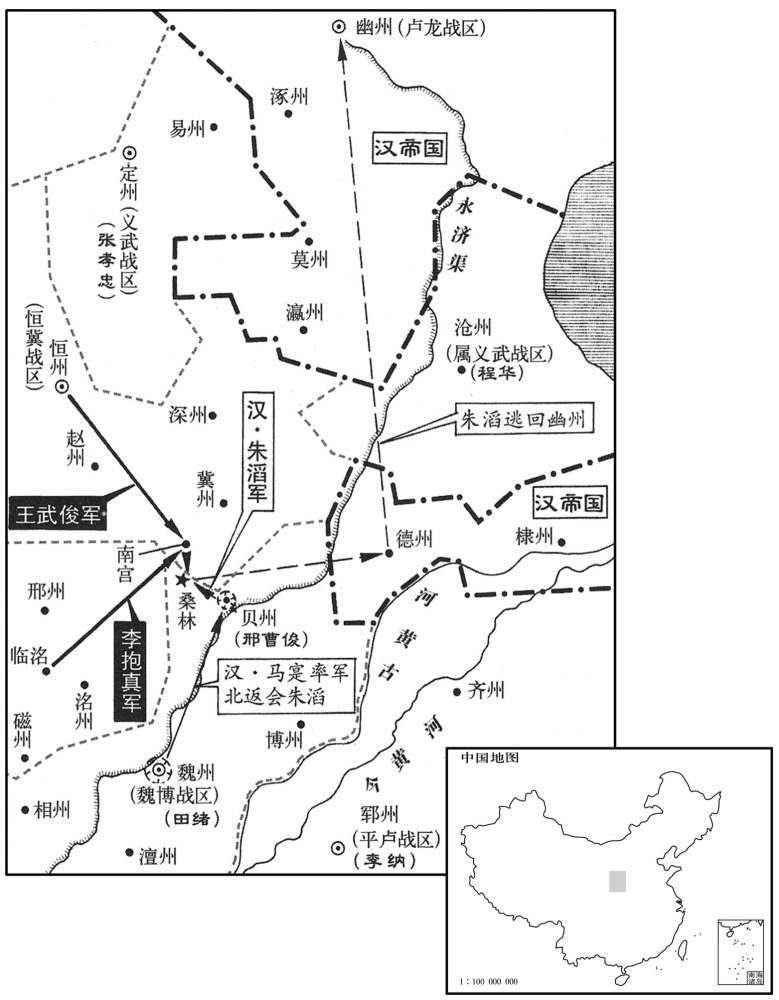
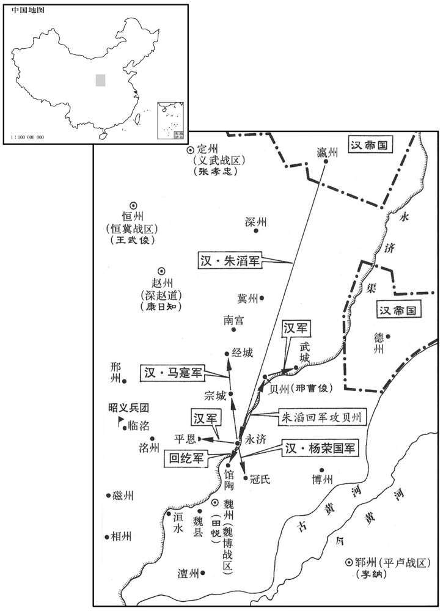
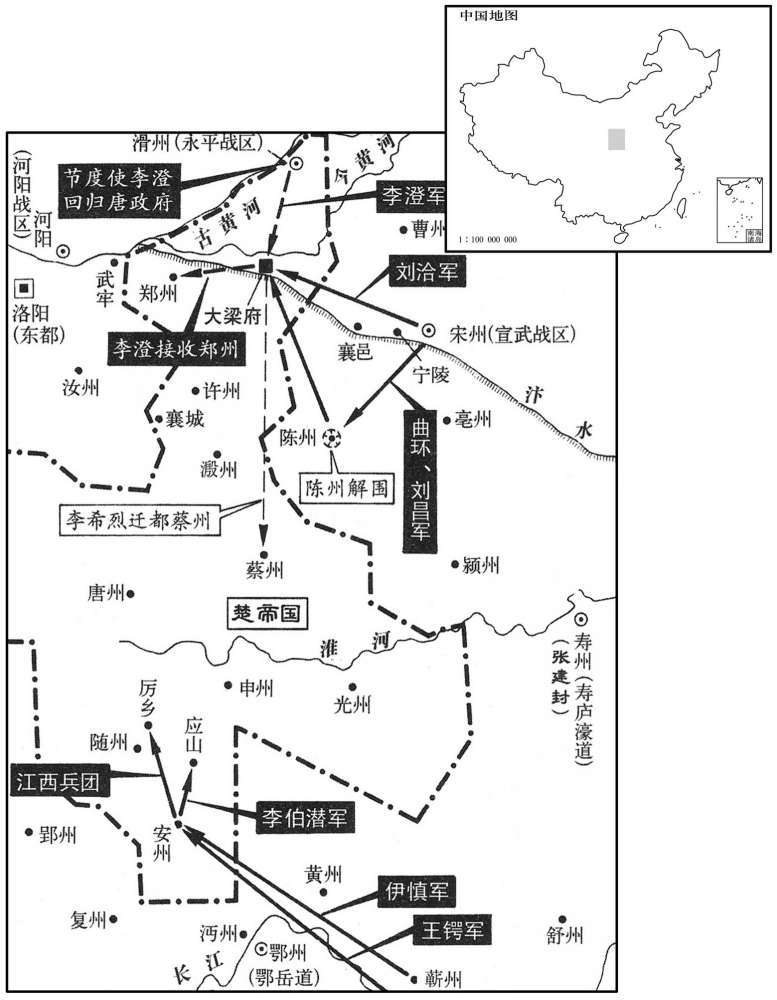

卷次与人物目录 / 卷231
资治通鉴 · 卷第二百三十一【唐纪四十七】
公元784年至公元785年 · 原文、白话与胡三省注
本页按胡注本编排保存全卷内容。白话采用本站所据译本，未可靠对应的内容另列说明；事件标题用于定位，并非原书文字。
本卷共83段原文，76段有译文对应，7段缺译或待核对。
卷第二百三十一【唐纪四十七】起阏逢困敦（甲子）五月，尽旃蒙赤奋若（乙丑）七月，凡一年有奇。
卷首原文与注释
德宗神武圣文皇帝六
公元784年 · 唐德宗神武圣文皇帝兴元元年
兴元元年〔（甲子、七八四）〕
上传原文的注释括号有异常，字符原样保留；无法可靠划分的段落默认全文显示。
本年记事分属相邻卷，按原书顺序分别保留：第229卷 · 第230卷 · 第231卷。
本年事件索引（现代整理）
- 韩滉运送江淮丝帛和粮食支援李晟军
- 陆贽劝德宗勿倚赖吐蕃，应信任唐军将领
- 陆贽劝德宗授予前线将帅临机处置权
- 泾王李侹去世
- 高承宗病重，由其子高明应暂知军务
- 李抱真、王武俊逼近贝州，朱滔准备迎战
- 回纥将领夸言能破王武俊，朱滔决定出战
- 王武俊设伏击败回纥，朱滔连夜弃营北逃
- 朱滔杀杨布、蔡雄后退回幽州
- 沧州兵变杀李固烈，程华受命安抚军府
- 李日华拒绝朱滔、王武俊招揽，朝廷准其独立建军
- 李日华假意索马，阻止王武俊控制沧州
- 李晟大阅军队，决定从苑北攻入长安
- 尚可孤击败仇敬忠，李晟进军光泰门
- 李晟强攻苑墙，唐军突破后大败朱泚军
- 张光晟暗中归顺李晟，朱泚弃长安西逃
- 浑瑊等将领攻克咸阳并分兵追击朱泚
- 李晟分兵驻守长安城门并处决朱泚党羽
- 王武俊回镇后辞让幽州、卢龙节度使
- 李晟遣于公异报捷，德宗称其为社稷之臣
- 李晟拒绝幕僚以荧惑退舍为由催促进军
- 朱泚逃亡途中被杀，源休、李子平被斩
- 陆贽阻止德宗追索奉天失散的宫人
- 班宏任宣慰使，慰问将士百姓
- 李晟处决受朱泚优待的官员并表彰守节者
- 李晟任司徒、中书令
- 梁州改名兴元府
- 浑瑊任侍中，韩游瑰、戴休颜升官
- 李忠臣逃往樊川后被擒杀
- 陆贽劝德宗按常道招抚李楚琳，不要胁迎
- 德宗从汉中出发
- 李晟整治长安政务，奏请治罪擅自赦人的宦官
- 德宗抵达凤翔，处决乔琳、蒋镇、张光晟
- 高郢劝李怀光归顺，德宗遣孔巢父赴河中宣慰
- 德宗回到长安，李晟等率军迎驾
- 伊慎、王锷攻克安州，击退李希烈援军
- 孔巢父宣慰河中，李怀光部下杀巢父抗命
- 德宗大赦天下
- 李泌劝德宗不必忧虑李怀光叛军
- 李泌劝德宗拒绝把安西、北庭让给吐蕃
- 李希烈杀害颜真卿
- 李晟兼领凤翔等镇并封西平王
- 浑瑊、马燧等奉命合兵讨伐李怀光
- 马燧将晋慈隰三州交还康日知
- 李楚琳任左金吾大将军
- 浑瑊任朔方行营元帅
- 李晟处决杀害张镒的叛将
- 王武俊击败朱滔，朱滔上表请罪
- 马燧率军攻打绛州
- 朝廷仍为李怀光部下预备冬衣和赏钱
- 李勉被罢免都统及节度使
- 阎晏攻同州，官军在沙苑战败
- 马燧攻克绛州并分兵收复邻县
- 德宗命宦官分掌神策军左右厢
- 田希鉴改任卫尉卿
- 李晟诱杀田希鉴等三十余名泾州叛将
- 翟崇晖围攻陈州，李澄焚节归顺
- 刘昌、曲环击败翟崇晖，李希烈逃回蔡州
- 李泌为韩滉辩白，劝德宗促其输粮
- 萧复反对密旨任命韦皋接替陈少游，罢相
- 刘洽攻克汴州，陈少游忧惧而死
- 韩滉制止王韶争夺淮南留后
- 蝗灾遍及各地，饥荒严重
五月，盐铁判官万年王绍以江、淮缯帛来至，〔万年，京县，属京兆。缯，慈陵翻。〕上命先给将士然后御衫。〔始改御夹而御衫。衫，单衣也。将，即亮翻。〕韩滉欲遣使献绫罗四十担诣行在，〔滉，呼广翻。使，疏吏翻。罗，绮也。绫，文缯。丁度曰：古者芒氏初作罗。一曰，帛之美者。今人以丝缕织而交眼者为罗。担，都滥翻。肩负为担。天子所至为行在所。〕幕僚何士干请行；滉喜曰：「君能相为行，〔为，于伪翻。〕请今过江。」士干许诺，归别家，则家之薪米储偫已罗门庭矣；偫，直里翻。登舟，则资装器用已充舟中矣；下至厨筹，〔厨筹，当作「厕筹」。〔【章：乙十五行「本厨」正作「厕」；乙十一行本同；孔本同。】〕滉皆手笔记列，无不周备。每担夫，与白金一版置腰间。〔史言韩滉强敏精密。〕又运米百艘以饷李晟，〔艘，苏遭翻；下同。晟，成正翻。考异曰：柳玭叙训曰：「上初至梁，省奏甚悦。又知西平聚兵必乏粮糗，命运米百艘。」按五月初梁州尚未春服，月末已克长安。梁、润相去数千里，诏命岂能遽达乎！今不取。〕自负囊米置舟中，将佐争举之，须臾而毕。艘置五弩手以为防授，有寇则叩舷相警，〔将，即亮翻。叩，击也。船边曰舷，音胡田翻。〕五百弩已彀矣。比至渭桥，〔彀，居候翻，引满。比，必利翻，及也。〕盗不敢近。〔近，其靳翻〕时关中兵荒，米斗直钱五百；及滉米至，减五之四。滉为人强力严毅，自奉俭素，夫人常衣绢裙，〔衣，于既翻。绢，与裙翻。缣，帛织成而无纹，其精善者曰缯，俗亦谓之绢。〕破，然后易。
五月，盐铁判官万年人氏王绍带着江淮地区的丝帛来到行在，德宗命令先供给将士，然后自己才穿上单衣。韩打算派遣使者进献绫罗四十担，送到行在去，幕僚何士干请求前往。韩高兴地说：“你若能够替我去，请在今天就渡过长江。”何士干答应了。当何士干回去告别家人时，韩已经让人将家中需用的柴米储备罗列在门口和庭院了。何士干登船时，韩已经让人把所需物资装备与用具在船中装满了。下至清除大便的拭秽之具，韩都亲手逐项记录，无不周全详备。每个担夫发给银牌一块，系在腰间。又有一次，韩运送一百艘船的粮米，给李晟充作粮饷，他亲自将米口袋背放到船中，他的将佐都争先去背米袋，不一会儿，就把船装完了。韩还让每艘船设置弩手五人，用来作为防备打劫和互相声援之用。有寇盗时，便敲击船舷，互通警报，只用弩手五百人便足够了。直至运到渭桥，都不曾有寇盗敢来靠近。当时关中战乱不息，每斗米价值五百钱，等到韩将米运到后，米价减少了五分之四。韩为人强干有力，严明果决，自己的日常所需节俭而朴素，他的夫人常常穿着没有纹彩的绢裙，穿破后才换。
吐蕃既破韩旻等，〔吐，从暾入声。破韩旻见上卷是年四月。〕大掠而去。朱泚使田希鉴厚以金帛赂之，吐蕃受之；韩游緕以闻。浑瑊又奏：「尚结赞屡遣人约刻日共取长安，既而不至；闻其众今奉大疫，近已引兵去。」〔泚，且礼翻，又音此。緕，工回翻。浑，户昆翻，又户本翻。瑊，古衔翻。考异曰：实录、旧本纪皆云：「乙丑，浑瑊与蕃将论莽罗衣众大破朱泚将韩旻等于；武功武亭川。」吐蕃传亦同。邠志曰：「李怀光竟不署敕，结赞亦不进军。」又曰：「浑公出斜谷，曹子达赴浑公，吐蕃以二万骑从之，既胜泚军，大掠而去。既使田希鉴以金帛赂之。」盖尚结赞虽引兵入塞，止屯邠南，但遗论莽罗衣将偏军助瑊破武于武功，大掠而去。既受泚赂，遂引归国。瑊于吐蕃归国之时有此奏耳。〕上以李晟、浑瑊兵少，〔少，诗沼翻。〕欲倚吐蕃以复京城，闻其去，甚忧之，以问陆贽。贽以为吐蕃贪狡，有害无益，得其引去，实可欣贺；乃上奏，其略曰：「吐蕃迁延顾望，反复多端，深入郊畿阴受贼使，〔使，疏吏翻。〕至令群帅进退忧虞：〔帅，所类翻。〕欲舍之独前，则虑其怀怨乘蹑；〔乘其虚、蹑其后也。蹑，尼辄翻。〕欲待之合势，则苦其失信稽延。戎若未归，寇终不灭。」又曰：「将帅意陛下不见信任，且患蕃戎之夺其功；士卒恐陛下不恤旧劳，而畏蕃戎之专其利；贼党惧蕃戎之胜，不死则悉遗人禽；〔遗，唯季翻。〕百姓畏蕃戎之来，有财必尽为所掠。是以顺于王化者其心不得不，怠陷于寇境者其势不得不坚。」又曰：「今怀光别保蒲、绛，吐蕃远避封疆，形势既分，腹背无患，瑊、晟诸帅，才力得伸。」又曰：「但愿陛下慎于抚接，劝于砥砺，中兴大业，旨月可期，不宜尚眷眷于犬羊之群，以失将士之情也。」
吐蕃打败韩等人以后，大规模地掳掠了一番便离去了。朱让田希鉴把大量金帛赠给吐蕃，吐蕃接受了，韩游便将此事上奏朝廷闻知。浑又上奏说：“尚结赞屡次派人与我约定，立下时限，共同攻取长安，后来却不曾前来。听说吐蕃人在今年春天遭受了大规模的瘟疫，最近已经领兵离去了。”由于李晟、浑兵力薄弱，德宗准备依赖吐蕃兵收复京城，现在听说吐蕃人离去，甚为担忧，便询问陆贽的意见。陆贽认为，吐蕃既贪婪，又狡猾，只有害处，没有裨益，赶上吐蕃领兵离去，实在值得庆幸。于是他进上奏疏，大略是说：“吐蕃拖延观望，反覆无常。他们深入京畿，暗中接受贼寇的指使，以致使得各军主帅进退两难。如果准备抛开吐蕃独自前往，那便顾虑吐蕃心怀怨恨，乘机紧随在后面骚扰；如果打算等待吐蕃会合兵势，那便苦于吐蕃不守信用，拖延时日。若是吐蕃没有回去，敌寇终难消灭。”他又说：“将帅猜想陛下不信任自己，而且担心吐蕃会与他们争功；士兵惟恐陛下不顾念旧日的劳绩，而且害怕吐蕃独占了赏赐；贼人一伙畏惧吐蕃取得胜利，即使自己不死，也会全部被擒；百姓害怕吐蕃到来，有点钱财，也必然会被他们完全掠去。所以，顺承皇上教化的人们的心意不得不日见懈怠，失陷到敌寇疆境内的人们不肯归附的情势也不得不渐趋坚定。”他又说：“现在李怀光另外去防守蒲州和绛州，吐蕃又远远地避开大唐的疆土，形势既已将李怀光与吐蕃分开了，我军腹心与后背都没有顾忌，浑、李晟各节帅的才能与力量也就可以得到施展了。”他又说：“只希望陛下谨慎地安抚将士，经常地砥砺自己，那么，中兴大业，可望在一个月的时间里完成，不应该还眷恋吐蕃这种犬羊之群，因而失去将士之心。”
上复使谓贽曰：「卿言吐蕃势甚善，然臹、晟诸军议规画，令其进取。朕欲遣使宣，慰，卿直审细条流〔【章：乙十一行「本流」作「疏」；孔本同。】〕以闻。」〔条，分也。流，派也。〕贽以为：「贤君选将，委任责成，故能有功。况今秦、梁千里，〔秦，谓咸阳。长安，古秦中之地。梁，谓梁州。〕兵势无常，遥为规画，未必合宜。彼违命则失君威，从命则害军事，进退羁碍，难以成功；〔史照曰：「羁，马络头也。碍，谓羁所挂碍也。」余谓贽言羁碍者，盖谓欲进则有所羁而不得进，欲退则有所碍而不得退也。〕不若假以便宜之权，待以殊常之赏，则将帅感悦，智勇得伸。」乃上奏，其略曰：「锋镝交于原野而决策于九重之中，机会变于斯须而定计于千里之外，用舍相碍，否臧皆凶。〔易曰：师出以律，否臧凶。王弼注曰：齐众以律，失律则散。律不可失，失律而臧，何异于否。失令有功，法所不赦，故师出不以律，否臧皆凶。陆德明释文曰：否，音鄙，恶也。臧作郎，翻，善也。〕上有掣肘之讥，〔宓子贱为单父宰，请吏于鲁侯。鲁侯使二吏与之俱至单父，子贱使吏书而掣其肘，书恶则从而怒之。二吏归，以告鲁侯。鲁侯曰：「此谓吾桡其政也。」〕下无死绥之志。」〔兵志曰：将军死绥，有前无却。〕又曰：「传闻与指实不同，悬算与临事有异。」又曰：「设使其中有肆情干命者，陛下能于此时戮其违诏之罪乎﹖是则违命者既不果行罚，从命者又未必合宜，徒费空言，祗劳睿虑，匪惟无益，其损实多。」又曰：「君上之权，特异臣下，惟不自用，乃能用人。」
德宗再次让人对陆贽说：“你所讲的有关吐蕃形势很好。但是，对浑、李晟各军应当计议出一个规划来，以便让他们进取敌军。朕打算派遣使者去安抚他们，你应当审慎详细地列出纲目，上报给朕知道。”陆贽认为，“贤明的君主选择将领，委以重任，责以成效，所以能够有所建树。况且，现在秦中与梁州相距千里，用兵的形势变化多端，远远地为将帅规划，不一定合乎时宜。如果将帅们违反命令，便有失君主的威严；如果将帅们听从命令，却对军中事务有害。或进或退，都有羁绊与阻碍，便难以取得成功。不如给他们见机行事的权力，以超常的奖赏对待他们，将帅们既感激，又喜欢，他们的智慧与勇敢便会得以施展。”于是陆贽进上奏疏，大略是说：“战事在原野上进行而决定方策却在幽深的宫禁之中，交战的时机瞬息万变而制定计谋却在千里以外，用命与不用命互相妨碍，仗打得好坏，结果都是不祥的。在上会招致对将帅处处 掣肘的讥讽，在下会丧失军队、将帅当死的士气。”他又说：“道听途说与亲临实际是不同的，凭空计议与据事决断也是有区别的。”他又说：“假使将帅中有肆意违犯命令的人物，陛下能在这时候以违背诏旨的罪名将他诛杀吗？由此可见，既然不能实现对违背命令行为的惩罚，遵从命令的行为又不一定合乎时宜，白白浪费空洞的言辞，只能忧劳陛下的思虑，不仅没有好处，损失实在太多。”他又说：“君主的权力，与臣下的权力大有区别。君主只有不自以为是，才能善于用人。”
癸酉，泾王侹薨。〔侹，肃宗子；音他顶翻。〕
癸酉（初三），泾王李去世。
徐、海、沂、密观察使高承宗，〔建中二年，李洧以徐州归国，明年，以为徐、沂、密观察使。洧卒，高承宗代之。〕甲戌，使其子明应知军事。
徐、海、沂、密观察使高承宗去世。甲戌（初四），德宗让高承宗的儿子高明应代理军中事务。
乙亥，李抱真、王武俊距贝州三十里而军。朱滔闻两军将至，急召马寔，寔昼夜兼行赴之。或谓滔曰：〔「武俊善野战，不可当其锋，宜徙营稍前逼之，使回纥绝其粮道。我坐食德棣之餫，〔餫，音运。粮运日餫。〕依营而陈，〔陈，读曰阵。〕利则进攻，否则入保，待其饥疲，然后可制也。」滔疑未决。会马寔军至，滔命明日山战。寔言：〔「军士冒暑困惫，〔惫，音蒲拜翻。〕请休息数日乃战。」
两版字句有差异，建议核对原文。
乙亥（初五），李抱真与王武俊在距离贝州三十里的地方驻扎。朱滔听说李、王两军即将到来，急忙传召马，马日夜兼程，前来赴召。有人对朱滔说：“王武俊善于在旷野作战，我军不应该与他正面交战，而应该移动营垒，稍稍向前逼近他一些，让回纥兵断绝他的运粮通道。我军不劳而得食德州、棣州运送来的粮食，靠近营垒列阵，有利时便进攻，不利时，便入营防守，等王武俊军饥饿疲惫了，然后才能制服他。”朱滔迟疑没有作出决定。适逢马的军队到，朱滔便命令他第二天出战。马说：“将士冒着炎天暑气，都很疲乏，请让他们休息几天再战。”
常待杨布、〔滔仿天朝置常侍。〕将军蔡雄引回纥达干见滔，远干曰：「回纥在国与邻国战，常以五百骑破邻国数千骑，如扫叶耳。今受大王金帛、牛酒前后无算，思为大王立效，〔为于伪翻；下同。〕此其时矣。明日，愿大王驻马高丘，观回緰为大土翦武俊之骑，使匹马不返。」〔为，于伪翻。〕在、雄曰：「大王英略盖世，举燕、蓟全军，将扫河南，清关中，今见小敌冗豫不击，〔冗，读与犹同。按后汉书马援传，计冗豫未决。章怀太子贤注曰：冗，行貌也，义见说文。，豫亦定也。冗，音以林翻。毛晃曰：冗豫不定，后汉马援传计冗豫未决，字从犬曲其足，与古尤同。与侵韵冗韵不同。唐史冗豫音淫，误。今从晃。〕失远近之望，将何以成霸业乎！达干请战是也。」滔喜，遂决意出战。
常侍杨布、将军蔡雄领着回纥达干来见朱滔，达干说：“回纥军在本国内与邻国交战，常常用骑兵五百人打败邻国骑兵数千人，如同打扫落叶一般。如今我们先后所接受的大王的钱帛和牛酒犒劳多得难以计算，想替大王立点儿功劳，现在是时候了。明天，希望大王骑马立在高丘上，观看回纥军替大王消灭王武俊的骑兵，让他连一匹马也跑不回去。”杨布、蔡雄说：“大王英才大略，盖世无双，带领燕、蓟全军，将要扫荡河南，肃清关中，现在才与小股敌人遭遇，便迟疑不定，不肯进击，使远近各地的人们大失所望，那将怎么能够完成霸业呢！达干请求出战是对的啊。”朱滔大喜，于是拿定主意，准备出战。
丙子旦，武俊遣其兵马使赵琳将五百骑伏于桑林，〔桑林之地，在经城西南。〕抱真列方陈于后，〔陈，读曰阵；下同。〕武俊引骑兵居前，自当回纥。〕回緰纵兵冲之，武俊使其骑控马避之。回纥突出其后，将还，武俊乃纵兵击之，赵琳自林中出横击之，回纥败走。武俊急追之，滔骑追击之。回兵亦走，自践其步陈，步骑皆东奔，滔不能制，遂走趣其营，〔趣，七喻翻；下同。〕抱真、武俊合兵日暮，昏雾，两军不能进，抱真军其营之西北，武俊军其东北。滔夜焚营，引兵出南门，趣德州遁去，委弃所掠资财山积；两军以雾，不能追也。
两版字句有差异，建议核对原文。
丙子（初六）早晨，王武俊派遣他的兵马使赵琳带领骑兵五百人在桑林埋伏下，李抱真列成方阵，居于后面，王武俊带领骑兵，居于前面，亲自抵挡回纥军。回纥军放出兵马向王武俊冲击，王武俊让他的骑兵驾驭好战马，避开回纥军。回纥军冲到王武俊军的后面，将要返回，王武俊这才放出兵马进击回纥军，赵琳也从树林中冲出，拦腰截击，回纥军战败逃走。王武俊急忙追击，朱滔的骑兵也在奔逃，在本军的步兵阵列中自行践踏，步兵、骑兵都向东逃奔，朱滔无法制止，于是向他的营地逃去，李抱真、王武俊合兵一处，追击朱滔。当时，朱滔是率领三万人出战的，结果死亡一万余人，逃散的也有一万余人，朱滔仅仅与数千人进入营垒坚守。正赶上天刚黑，雾气浓重昏暗，前来追击的两支军队无法前进，于是李抱真在朱滔营地的西北面驻扎下来，王武俊在朱滔营地的东北面驻扎下来。当天夜里，朱滔烧掉营垒，领兵从南门出来，向德州逃去，丢下他们所劫掠的财物堆积如山。李、王二军因雾气浓重的原故，不能前去追击。
滔杀杨布、蔡雄而归幽州，心既内凓，又恐范阳留守刘怦因败图己。〔怦、普耕翻。〕匉悉发留守兵夹道二十里，具仪仗，迎之入府，相对悲喜，时人多之。
朱滔杀了杨布和蔡雄，于是回到幽州。他既感到内心惭愧，又惟恐范阳留守刘怦乘着兵败之机谋害自己。刘怦悉数派出留守的兵员，夹道列队长达二十里，备办了仪仗，把朱滔迎入军府，两人相对既悲又喜，当时的人们都称许刘怦的做法。

初，张孝忠以易州归国，诏以孝忠为义武节度使，以易、定、沧三洲隶之。〔事见二百二十七卷建中三年。〕沧州刺史李固烈，李惟岳之妻兄也，〔子惟岳，本姓张，故娶李氏。〕请归恒州，孝忠遣押牙安喜程华交其州事。〔安喜县，汉之卢奴县，属中山国，燕主慕容垂改为不连，北齐改为安喜，陏改为鲜虞，唐武德四年复为安喜，带定州。〕固烈悉取军府绫、缣、珍货数十车，将行，军士大噪曰：「刺史扫府库之实以行，将士于后饥寒，柰何！」遂杀固烈，屠其家。程华闻乱，自窦逃出，乱兵求得之，请知州事；华不得已，从之。孝忠闻之，既版华摄沧州刺史。〔考异曰：旧张孝忠传曰：「遣华往沧州交检府藏。」程日华传曰：「孝忠令华诣固烈交郡，固烈死，孝忠版华知沧州事。」燕南记曰：「孝忠差牙官程华与固烈交割，固烈死，孝忠闻之，当日差人送文牒，令摄刺史。」按固烈既去，则沧州无主，孝忠岂得但令华交检府藏！今从华传及燕南记。〕华素宽厚，推心以待将士，将士安之。
当初，张孝忠率领易州归顺了朝廷，德宗颁诏任命张孝忠为义武节度使，将易、定、沧三州隶属于他。沧州刺史李固烈是李惟岳的妻兄，他请求回恒州去，张孝忠派遣押牙安喜人氏程华与他交接沧州事宜。李固烈将军府内的绫绢和珍宝财物数十车全部取走，准备启程时，将士们大声喧闹着说：“刺史将库存的财物尽其所有带着走了，将士们以后挨饿受冻时，如何是好？”于是，将士们杀了李固烈及其全家。程华听说发生变乱，从孔道中逃了出来，变乱的将士找到了他，请他执掌州中事务。程华没有办法，听从了他们的要求。张孝忠听说此事后，立即便给程华授官为代理沧州刺史。程华平素待人宽和厚道，推心置腹地对待将士，将士们安定了。
会朱滔、王武俊叛，更遗人招华，〔更，工衡翻，迭也。〕华皆不从。时孝忠在定州，自沧如定，必过瀛州，瀛隶朱滔，道路阻涩。〔涩，色立翻。史照曰：阻，隔也。涩，不通滑也。〕沧州录事参军李宇说华，表陈利害，请别为一军，华从之，〔说，输芮翻；下同。〕遣宇奉表诣行在。上既以华为沧州刺史、横海军副大使、知节度事，赐名日华，令日华岁供义武租钱十二万缗。
正赶上朱滔、王武俊反叛，两人轮番派人传召程华，程华一概不肯从命。当时，张孝忠驻军定州，从沧州到定州去，必须经过瀛州，瀛州隶属朱滔，两处往来的道路阻隔不通。沧州录事参军李宇劝说程华，向朝廷上表陈说利害，请朝廷在沧州另设一个军，程华听从了这一建议，派遣李宇带着表章前往行在，德宗当即任命程华为沧州刺史、横海军副大使，代理节度使事务，赐名叫做日华，命令程日华每年供给义武租税钱十二万缗。
王武俊又使人说诱之；时军中乏马，日华绐使者曰：「王大夫必欲相属，当以二百骑相助。」武俊给之，日华悉留其马，遣其士归。武俊怒，而方与马燧等相拒，不能攻取，日华由是获全。及武俊归国，日华乃遣人谢过，偿其马价，且赂之。武俊喜，复与交好。〔骑，奇寄翻。好，呼到翻。〕
王武俊又让人劝说引诱程日华，当时军队中缺少马匹，程日华欺骗王武俊的使者说：“王大夫果真打算有事相嘱托的话，就应该派来二百人马援助我。”王武俊将人马派给了程日华，程日华却将他的马匹悉数留下，而将他的士兵都打发回去。王武俊大怒，但当时他正与马燧等人相对抗，不能够攻打程日华，程日华因此得以保全。到王武俊归顺朝廷时，程日华便派人向王武俊承认了过错，偿还了他的马价，并且对他有所赠送，王武俊高兴了，再次与程日华交好。
庚寅，李晟大陈兵，谕以数复京城。先是，姚令言等屡遣訑人觇晟进军之期，〔先，悉荐翻。訑，徒协翻。觇，丑廉翻。〕皆为逻骑所获。〔逻，郎佐翻，巡察者也。〕晟引示以所陈兵，谓曰：「归语诸贼：〔语，牛倨翻。〕努力固守，勿不忠于贼也！」皆饮之酒，〔饮，于禁翻。〕给钱而纵之。遂引兵至通化门外，曜武而还，〔还，从宣翻，又如字。〕贼不敢出。晟召诸将，问兵所从入，皆请「先取外城，据坊市，然后北攻宫阙。」晟曰：「坊市狭隘，贼若伏兵格鬬，居人惊乱，非官军之利也。今贼重兵皆聚苑中，不若自苑北攻之，溃其腹心，贼必奔亡。如此，则宫阙不残，坊市无扰，策之上者也！」诸将皆曰：「善！」乃牒浑瑊及镇国节度使骆元光、商州节度使尚可孤，刻期集于城下。〔京城之下也。〕
庚寅（二十日），李晟将兵马布成巨大的阵列，向将士宣布前去收复京城。在此之前，姚令言等人屡次派遣探子前来刺探李晟进军的日期，但都被巡逻的骑兵俘虏了。现在，李晟领着这些俘虏，让他们观看自己布成阵列的兵马，对他们说：“你们回去告诉每一个贼兵贼将，让他们卖力气地坚决防守吧，可不要不忠于朱老贼！”李晟让他们都喝了酒，给了一些钱，便将他们放了回去。李晟于是领兵来到通化门外，将武力显示了一番，才又回去，敌军不敢出城。李晟召集各位将领，询问军队攻打入城的路线，将领们都主张先夺取外廓城，占领坊市，然后向北攻打宫苑。李晟说：“坊市狭窄，倘若贼军在那里埋伏下兵马，与我军搏斗，居民惊惶散乱，对官军并没有好处。现在贼军的重兵都聚集在宫苑中，不如从宫苑北面进攻他们，使他们的核心先行崩溃，敌军肯定就会逃亡。这样做，宫苑不会残破，坊市不受骚扰，这才是上策呢！”各将领都说：“好。”于是，李晟给浑以及镇国节度使骆元光、商州节度使尚可孤送去文书，限定日期，在城下会集。
壬辰，尚可孤败泚将仇敬忠于蓝田西，斩之。〔败，补遇翻。〕乙未，李晟移军于光泰门外米仓村。〔光泰门，苑城东北门。程大昌曰：光泰门在通化门北，小城之东门，门东七里有长乐坡。吕大防长安图：光泰门者，京城东门，大明宫东苑之东。〕丙申，晟方自临筑垒，泚骁将张庭芝、李希倩引兵大至，晟谓诸将曰：「始吾忧贼潜匿不出，今来送死，此天赞我，不可失也！」命副元帅兵马使吴诜等纵兵击之。时华州营在北，兵少，〔华州兵，骆元光之兵。华，户化翻。少，诗沼翻。〕贼并力攻之，晟命牙前将李演等帅精兵救之。演等力战贼败走；演等追之，乘胜入光泰门；再战，又破之。会夜，晟敛兵还。贼余众走入白华门，白华殿门也。〕夜，闻恸哭。布倩，希之弟也。
壬辰（二十二日），尚可孤在蓝田西面打败朱的将领仇敬忠，并诛杀了他。乙未（二十五日），李晟将军队调到光泰门外的米仓村。丙申（二十六日），李晟正在亲自指挥修筑营垒时，朱的骁将张庭芝、李希倩领兵卷地而来，李晟对各将领说：“最初我还担心贼军躲藏着不肯出战，现在赶来送死，这是上天助我，良机决不可失！”李晟命令副元帅、兵马使吴诜等人放出兵马，进击敌军。当时，骆元光华州军的营垒在北面，兵马较少，敌军便合力攻打骆元光部，李晟命令牙前将领李演等人率领精锐兵马前去援救。李演等人奋力接战，贼军败走。李演等人追击敌军，乘胜进入光泰门，再次接战，又打败敌军。适逢夜幕降临，李晟收兵回营。敌军的残余人马逃入白华门，夜里可以听到极其悲痛的哭声。李希倩是李希烈的弟弟。
丁酉，晟复出兵，〔复，扶又翻。〕诸将请待西师至夹攻之。〔西师，谓浑瑊之师也。〕晟曰：贼数败，已破胆，〔数，所角翻。〕不乘胜取之，使其成备，非计也。」贼又出战，官军屡捷；骆元光败泚众于浐西。〔败，补迈翻。〕戊戌，晟陈兵于光泰门外，使李演及牙前兵马使王佖将骑兵，〔佖，蒲必翻。〕牙前将史万顷将步兵，直抵苑墙神脉村。〔按新书李晟传，神脉村在苑北。脉，古牙翻。〕晟先使人夜开苑墙二百余步，比演等至，〔比，必利翻，及也。〕贼已树栅塞之，自栅中刺射官军，〔塞，悉则翻。刺，七亦翻。射，而亦翻。〕官军不得进。晟怒，叱诸将曰：「纵贼如此，吾先斩公辈矣！」万顷惧，帅众先进，拔栅而入，〔帅，读曰率；下同。〕佖、演引骑兵继之，贼众大溃，诸军分道并入。姚令言等留力战，成命决胜军使唐良臣等步骑蹙之，且战且前，凡十余合，贼不能支。至白华门，有贼数千骑出官军之背，晟帅百余骑回御之，左右呼曰：〔呼，火故翻。〕「相公来！」贼皆惊溃。〔泾原将士素畏服李晟，故闻其来而惊溃。
丁酉（二十七日），李晟再次出兵，各将领请求等待西面的浑军赶到后夹攻敌军，李晟说：“贼军屡次失败，已经吓破了胆，不乘胜攻取敌军，而使他们作好防备，这不是良策。”敌军又来出战，官军屡屡获胜，骆元光又在水西面打败了朱军。戊戌（二十八日），李晟在光泰门外面摆开军阵，让李演以及牙前兵马使王带领骑兵，让牙前将领史万顷带领步兵，直接抵达宫苑墙边的神村。李晟事先让人在夜间凿开宫苑的垣墙宽二百余步，待到李演等人到来时，敌军已经竖起栅栏堵塞了宫苑垣墙的缺口，从栅栏里面刺杀、射击官军，官军不能前进。李晟愤怒地大声呵斥各将领说：“你们放纵贼军到这般地步，我要先斩诸位了！”史万顷害怕，率领部众首先前进，拔除栅栏，冲了进去，王、李演带领骑兵相继而入，敌军纷纷逃散，各军分路一齐进入宫苑。姚令言等人仍然在奋力接战，李晟命令决胜军使唐良臣等人的步兵、骑兵迫近他们，一边接战，一边前进，约有十余回合，敌军不能支持。来到白华门前时，敌军有骑兵数千人从官军背后出战，李晟率领骑兵一百余人回头抵御他们，李晟身边的人大声喊道：“李相公来了！”敌军都惊惶地溃散了。
先是，泚遣张光晟将兵五十屯九曲，〔先，悉荐翻。〕去东渭桥十余里，光晟密输款于晟。及泚败，光晟劝泚出亡，泚乃与姚令言帅余众西走，犹近万人。〔帅，读曰率。近其靳翻。〕光晟送泚出城，还，降于晟。〔降，户江翻。〕晟遣兵马使田子奇以骑兵追泚。晟屯含元殿前，舍于右金吾仗，〔今元殿，唐东内之前殿也。〕〔左金吾仗，在殿之东；右金吾仗，在殿之西。〕令诸军曰：「晟赖将士之力，克清宫禁。长安士庶，久陷贼庭，若小有震惊，非吊民伐罪之意。晟与公等室家相见非晚，五日内无得通家信。」命京兆尹李齐运等安忍居人。晟大将高明曜取贼妓，〔妓，渠绮翻，女乐也。〕尚可孤军士擅取贼马，晟皆斩之，军中股粟。公私安堵，秋毫无犯，远坊有经宿乃知官军入城者。〔史言李晟御军严整。〕
在此之前，朱派遣张光晟领兵五千人在九曲屯驻，该处距离东渭桥有十余里，张光晟暗中向李晟表示诚意。到朱战败时，张光晟劝说朱出城逃走，朱便与姚令言率领残余部众向西面逃跑，这时朱仍然有将近一万人。张光晟将朱送出城，又回到城中，归降了李晟。李晟派遣兵马使田子奇率领骑兵追击朱。李晟在含元殿前驻扎军队，在右金吾仗的房舍住下，他命令各军说：“我依靠将士们的努力，得以肃清宫禁。长安的士子庶民，长期失陷在贼寇的统治之下，如果使他们稍微受到些震惊，就不是安抚人民、讨伐罪人的本意了。我与诸位同家里人相见的时候不会太晚了，但五天以内不能与家里人互通消息。”他命令京兆尹李齐运等安慰居民。李晟的大将高明曜占有了敌人的歌妓，尚可孤的将士擅自牵走了敌人的马匹，李晟将他们一概斩杀，军中将士害怕得连大腿都发抖了。公私相安无事，官军对百姓没有丝毫侵犯，偏远的坊，有过了一夜以后才知道官军已经进了都城。
是日，浑瑊、戴休颜、韩游緕亦克咸阳，败贼三千余众，〔败，补迈翻。〕闻泚西走，分兵邀之。
两版字句有差异，建议核对原文。
这一天，浑、戴休颜、韩游也攻克了咸阳，打败敌军三千余人。浑等人听说朱向西逃走，便分兵拦击朱。
己亥，晟仗京西兵马使孟涉屯白华门，尚可孤屯望仙门，〔唐大明宫南面五门，其中曰丹凤门，丹凤庂东为望仙门，又东为延政门；丹凤之西为建福门，又西为与安门也。〕骆元光屯章敬寺，晟以牙前三千人屯安国寺，〔程大昌曰：章敬寺，在东城之外，安国寺，在大明宫东南。〕以镇京城；斩泚党李希倩、敬釭、彭偃等入人于市。
己亥（二十九日），李晟让京西兵马使孟涉在白华门驻扎，让尚可孤在望仙门驻扎，让骆元光在章敬寺驻扎，李晟自率牙前兵三千人在安国寺驻扎，以便镇守京城。李晟又命令将朱的党羽李希倩、敬、彭偃等八人在闹市中斩杀。
王武俊既破朱滔，还怛州，表让幽州、卢龙节度使，上许之。〔王武俊兼幽州、卢龙节度使，见上卷是年二月。恒，户登翻。
本段缺少可靠对应白话，原文完整保留；未使用生成译文。
六月，癸卯，李晟遣掌书记吴人于公异户露布上行在〔上，时掌翻。〕曰：「臣已肃清宫禁，祗谒寂园，锺畓不移，畓，其吕翻。说文曰：畓，锺鼓之柎也。饰为猛兽。释名曰：横日栒，纵曰畓。又云：虡，天上神兽也，鹿头龙身，象之为畓，以架锺鼓。〔庙貌如故。」〔孔颖达曰：庙之言貌也。死者精神不可得而见，但以生时之宫室象貌为之耳。孝经注云：宗，尊心。庙，貌也。〕上泣下曰：「天生李，晟，以为社稷，非为朕也。」〔为于伪翻。史言于公异为李成作露布得体。
本段缺少可靠对应白话，原文完整保留；未使用生成译文。
晟在渭桥，荧惑守岁，〔岁星所在，其国有福。荧惑守之，是为罚星。〕久之乃退，宾佐皆贺，曰：「荧惑退舍，皇家之福也！宜速进兵。」晟曰：「天子野次，臣下知死敌而已；天象高远，谁得知之！」既克长安，乃谓之曰：「向非相拒也，吾闻五星羸、缩无常，〔前汉书天文志曰：凡五星早出为羸，羸为客，晚出为缩，缩为主人。晋书天文志曰：失次而上为羸，失之而下为缩，〕万一复来守岁，〔复，扶又翻。〕吾军不战自溃矣！」皆谢曰：「非所及也！」
李晟驻兵渭桥时，火星停留在木星附近，经过很长时间才离去。他的幕僚将佐都向他庆贺说：“火星退离木星，这是皇室的福象啊，应当赶快进兵。”李晟说：“皇上置身旷野，人臣只知道为战胜敌人而死罢了。天象高远难测，谁能够弄得清楚！”在攻克长安后，李晟才对他们说：“以往可不是我要拒绝你们的意见。我听说过，金木水火土五星早出与晚出都没有准儿，万一火星再次来靠近木星，我军就会不战自溃了。”大家都向他认错说：“这些道理不是我们所能看得透的！”
朱泚将奔吐蕃，其众随道散亡，比至泾州，〔比，必利翻，及也。〕纔百余骑。希鉴闭城城拒之，泚谓之曰：「奴之节，吾所授也。〔朱泚以田希鉴为泾原节度使，见上卷是年四月。〕柰何临危相负！」使焚其门；希鉴取节投火中曰：「还汝节！」泚众皆哭。泾卒遂杀姚令言，诣希鉴降。泚独与芑阳亲兵及宗族、宾客北趣驿马关；〔趣，七喻翻。〕宁州刺史夏侯英拒之。至彭原西城屯，〔彭原，本彭阳县，隋开皇十八年更名，唐属宁州。〕其将梁庭芬射泚坠坑中，〔射，而亦翻。〕韩旻等斩之，诣泾州降。源休、李子平奔凤翔，李楚琳斩之，皆传首行在。
朱准备逃奔吐蕃，他的部众沿途散失流亡，及至来到泾州时，剩下骑兵才一百余人。田希鉴关闭城门，不让他进城，朱对他说：“你的节度使的旌节，乃是我授给你的，你怎么能够在我面临危难时，便辜负了我呢！”他让人去烧掉泾州城门，田希鉴取出旌节，丢在火中说：“还你旌节！”朱的部众都哭了起来。于是泾州士兵杀了姚令言，到田希鉴那里投降。朱独自与范阳亲兵及其本宗族人和幕府宾客向北奔向驿马关，宁州刺史夏侯英拒绝让他通过。到彭原县西城屯时，朱将领梁庭芬将他射落到土坑之中，韩等人斩杀了朱，前往泾州归降。源休、李子平逃奔凤翔，李楚琳将他们斩杀了。他们的头颅，全都被传送到行在。
上命陆贽草诏赐浑瑊，使访求奉天所失裹头内人。〔裹头内人，在宫中给使令者也。内人给使令者皆冠巾，故谓之裹头内人。〕贽上奏，以为：「巨盗始平，疲瘵之民，疮痍之卒，尚未循拊，〔瘵，仄介翻。〕而首访妇人，非所以副惟新之望也。谋始尽善，克终已稀；始而不谋，终则何有！所赐瑊诏，未敢承旨。」上遂不降诏，竟遣中使求之。
德宗命令陆贽起草诏书赐给浑，使访求奉天所失散了裹头内人。陆贽进上奏章认为：“大盗刚刚平定，对疲困病苦的人民和遭受创伤的士兵还没有抚慰，反而首先查找宫中妇女，这是不符合人们刷新政治的愿望的。能够将事业的开端谋划得尽善尽美，同时能够取得完美的结局的例子是为数不多的，如果连事业的开端都不曾为之谋划，还有什么结局可言！陛下赐给浑的诏书，我不敢接旨草拟。”于是，德宗不再下诏，但还是派遣中使去寻找传令宫女。
乙巳，诏吏部侍郎班宠充宣慰使，劳问将士，抚慰蒸黎。
乙巳（初六），德宗颁诏命令吏部侍郎班宏充任宣慰使，前去慰劳将士，安抚百姓。
乙已，诏吏部侍郎班宏充宣忍使，劳问将士，抚忍蒸黎。〔按诗传笺：蒸，众也；黎，亦众也。劳，力到翻。
本段缺少可靠对应白话，原文完整保留；未使用生成译文。
丙午，李晟斩文武官受朱泚宠任者崔宣、洪经纶等十余人；〔考异曰：袁皓兴元圣功录载李晟奏宥郭晞状曰：「晞顷因銮舆顺动，山谷潜藏，逆贼所知，升致城邑；迫胁授任，前后极多，苍黄之中，伪令仍及，坚卧当节，即惧严刑，随俗从宫，又伤素业。然晞已染污俗，尚可昭明；子仪勋劳，书在王府，父为中帛金之佐，子有疑谤之名，非止在于一身，实恐玷于先烈。况臣总领士马，孤立渭桥，频有帛书，累陈诚效。」按晞旧传，「泚欲饮掌兵，晞阳瘖。泚以兵胁之，终不语。贼知其不可用，乃至。晞潜奔奉天，从驾还京。」不云终臣事泚；而皓载晟此状，恐非其实。今不取。〕又表守节不屈者刘乃、蒋沇等。〔刘乃，事见上卷是年二月。蒋况，事见二百二七八卷建中四年。
本段缺少可靠对应白话，原文完整保留；未使用生成译文。
己酉，以李晟为司徒、中书令，骆元光、尚可孤各迁官有差。〔赏收复京城之功也。〕以检校御史中丞田希鉴为泾原节度使。
己酉（初十），德宗任命李晟为司徒、中书令，骆元光、尚可孤各自升官不等，还任命检校御史中丞田希鉴为泾原节度使。
诏改梁州为兴元府。〔以纪元为府号始此。〕
德宗颁诏将梁州改称为兴元府。
甲寅，以浑瑊为侍中，韩游緕、戴休颜各迁官有差。〔赏扈卫之功也。〕
甲寅（十五日），德宗任命浑为侍中，韩游、戴休颜各自升官不等。
朱泚之败也，李忠臣奔樊川，〔邴道元水经注曰：樊川，即杜县之樊乡，汉高祖还定三秦，以樊哙灌废丘最，赐吧于此乡也。按其地在唐长案城南。程大昌曰：樊川，在万年县南三十五里。擒获，丙辰，斩之。
本段缺少可靠对应白话，原文完整保留；未使用生成译文。
上问陆贽：「今至凤翔有迎驾诸军，形势甚盛，欲因此遣人化李楚琳，何如﹖」贽上奏，以为：「如此则事同胁执，以言乎除乱则不武，以言乎务理则不诚，用是时巡，后将安入！〔书周官，六年，王乃时巡，考制度于四岳，诸侯各朝于方岳。孔安国曰：春东、夏南、秋西、冬北，故谓之时巡。〕议者或谓之权，臣窃未谕其理。夫权之为义，取类权衡，〔衡，以平物。权，则权物之轻重，揆之以衡平。〕今撵路所经，首行胁夺，一帅而亏万乘之义，得一方而结四海之疑，〔帅，读曰率。乘，绳证翻。〕乃是重其所轻而轻其所重，谓之权也，不亦反乎！以反道为权，以任数为智，君上行之必失众，臣下用之必陷身，历代之所以多丧乱而长奸邪，由此误也。〔陆贽此论，所以正汉儒反经合道为样之失。程氏曰：汉儒以反经合道为权，故有权变、权术之说，皆非也。权只是经字。自汉以下无人识权字。丧，息浪翻。长，知两翻。〕不如〔【章：乙十五行本「如下」有「俟」字；乙十一行本同；孔本同；张校同；退斋校同。】〕奠枕京邑，〔史照曰：奠枕，安枕也。扬子曰：奠枕于京。〕征授一官，彼喜于恩宥，将奔走不暇，安敢辄有旅拒，史召曰：旅，众也。拒，捍也。谓率众以相捍也。〔复劳诛鉏哉！」〔复，扶又翻。〕
德宗询问陆贽说：“如今开到凤翔的，有迎驾各军，声势甚为盛在，大，我打算借此机会派人将李楚琳替代下来，你看怎么样？”陆贽进上奏章认为：“如果这样做，事情就如同胁迫拘捕，将这种做法说成清除变乱那是并不能显示威武的，说成是务求政治修明那是并不能表明诚意的，若将此作为陛下的巡视之举，以后将怎么进入京城！议论此事的人将这种办法称为权变，我私下里不能明白其中的道理。一般地说，权变的含义是就衡量事物轻重而言的。如今在陛下车驾经过处，首先施行胁迫削官，更换了一个节帅而使陛下的大义受到损害，获得了一个地方而使举国上下疑虑，这乃是看重了本该看轻的东西，而看轻了本该看重的东西，将此称作权变，不是正好说反了吗！以违背法则为权变，以任用权术为机智，君主实行起来必然会失去人心，臣下实行起来必然会使自身受害，历代死丧祸乱频繁而奸邪滋长的原因，就是因为这个错误啊。不如待陛下安枕于京城以后，再召回李楚琳，授给他一个官职，他因陛下降恩宽恕而高兴，将会为朝廷奔走效力都来不及呢，怎么敢动不动就聚众抗命，需要再次烦劳朝廷去铲除他呢！”
戊午，车驾发汉中。
戊午（十九日），德宗的车驾从汉中启程。
李晟综理长安以备百司，〔史照曰：综，机缕也。理，治也。谓整治其事，使皆有纪，若机之综缕也。〕自请至凤翔迎扈，上不许。内常侍尹元贞奉使同华，辄诣河中招谕李怀光。〔此唐之中世阉宦之常态，也。华，户化翻。晟奏：「元贞矫制擅赦元恶，请理其罪！」理，治也。避高宗讳，以「治」为「理」。
两版字句有差异，建议核对原文。
李晟总揽治理长安事务，以便使各部门完备起来。他主动请求到凤翔去迎接德宗，扈从车驾，德宗不允。内常侍尹元贞奉命出使同华，却随即到河中劝说李怀光归顺朝廷，李晟上奏说：“尹元贞假托朝命，擅自赦免首恶，请将他治罪！”
秋，七月，丙子，车驾至凤翔，斩乔琳、蒋镇、张光晟光。李晟以光晟虽臣贼，而灭贼亦颇有力，欲全之；上不许
秋季，七月，丙子（初七），德宗的车驾来到凤翔，斩杀了乔琳、蒋镇、张光晟等人。张光晟虽然曾向朱称臣，但消灭朱也很出力，因此李晟打算保全他，德宗不肯答应。
副元帅判官高郢数劝李怀光归款，〔数，所角翻。高郢判李怀光幕府，怀光此时己罢副元帅而不肯释兵，史仍书郢元官。〕怀光遣其子璀诣行在谢罪，〔璀，七罪翻。〕请束身归朝。〔朝，直遥翻。〔庚辰，诏遣给事中孔巢父赍先除怀光太子保敕〔怀光光见上卷本年三月。〕诣河中宣慰，朔方将士悉复官爵如故。〔朔方将士，怀光所部也。考异曰：兴元圣功录有李晟奏别劝怀光归投状云。「今怀光即欲东身」，盖自郢劝导，今取之。
本段缺少可靠对应白话，原文完整保留；未使用生成译文。
壬午，车驾至长安，浑瑊、韩游緕戴休颜以其众扈从，〔从，才用翻。〕李晟、骆元光、尚可孤以其众奉迎，亦骑十余万，旌旗数十里。晟谒见上于三桥，〔三桥，在望贤宫之东，京城之西。见，贤遍翻。〕先贺平贼，后谢收复之晚，伏路左请罪。上驻马慰，为之掩涕，〔为，于伪翻。掩面垂涕，谓之掩涕。〕命左右扶上马。〔上，时掌翻。〕至宫，每闲日，〔闲，读曰闲。唐世天子以只日视朝，双日谓之闲日。辄宴勋臣，赏赐丰渥，李晟为之首，浑瑊次之，诸将相又次之。
两版字句有差异，建议核对原文。
壬午（十三日），德宗的车驾来到长安。浑、韩游、戴休颜率领自己的部众扈从德宗前来，李晟、骆元光、尚可孤率领自己的部众前去迎候，步兵、骑兵十余万人，旗帜连绵了几十里。李晟在三桥谒见德宗，首先为平定了朱而道贺，然后为收复京城太迟而道歉，跪在道路左侧请求恕罪。德宗停下马来安慰他，被他感动得掩而流泪，命令侍从人员扶他上马。回到宫中后，每逢不上朝的日子。德宗总是宴请立下功勋的大臣，赏赐的物品甚为丰厚，每次都是李晟居于首位，浑居于第二，各将相又居于他们之下。
曹王皋遣其将伊慎、王锷围安州，李希烈遣其甥刘戎虚将步骑八千救之，皋遣其别将李伯潜逆〔【章：乙十五行本「逆」下有「击」字；乙十一行本同；孔本同；退斋校同。】〕之于应山，〔刘昫曰：应山，本汉南阳郡随县地；梁分随县置之阳县，隋改为应山，以县北山为名，唐属随州。九域志：应山，县，在随州北一百八里。〕斩首千余级。生擒戎虚，徇于城下，安州遂降，以伊慎为安州剌史。又击希烈将康叔夜于厉乡，走之。〔记祭法：厉山氏之有天下也，其子农，能殖百壳。注云：厉山氏，炎帝也，起于厉山。西汉书地理志注云：随，故厉国。皇甫谧曰：今随之厉乡。九城志：随州厉乡村有厉山。今自枣阳至厉乡，道路交错，号九十九冈。
本段缺少可靠对应白话，原文完整保留；未使用生成译文。
丁亥，孔巢父至河中，李怀光素服待罪，巢父不之止。怀光左右多胡人，皆叹曰：「太尉无官矣！」〔胡人不习朝章，见怀光素服待罪，故以为无官。〕巢父又宣言于众曰：「军中谁可代太尉领军者﹖」于是怀光左右发怒諠噪；宣诏未毕，众杀巢父及中使啖守盈，怀光亦不之止，〔考异曰：邠志曰：「七月十二日，驾还长安。上使谏议大夫孔巢父、中官谭怀仙持诏赦怀光曰：『奉天之时，非卿不能救朕；今日之事，非朕不能容卿。宜委军赴阙，以保官爵。』，使者将至，怀光阴导其卒使留己。卒之蕃、浑希怀光意，辄害二使，欲食其肉。怀光翼而覆之，全尸以闻。」以从实录。〕复治兵为拒守之备。〔复，夫又翻。治，直之翻。〕
丁亥（十八日），孔巢父来到河中，李怀光穿着民服，等待治罪，孔巢父没有制止他。李怀光的亲信多是胡人，他们都叹着气说：“太尉保不住官爵了！”孔巢父又向大家扬言说：“军中有谁可以代替太尉统领军队呢？”于是，李怀光的亲信生气地喧闹起来，诏书还没有宣读完毕，众人便杀死了孔巢父以及中使啖守盈。李怀光对此也不加制止，再次整治兵马，作抵御防守的准备。
辛卯，赦天下。
辛卯（二十二日），大赦天下。
初，肃宗在灵武，〔见二百十九卷至德元载。〕上为奉节王，学文于李泌。代宗之世，泌居蓬莱书院，〔见二百二十四卷水泰元年。史照曰：泌，兵媚切。〕上为太子，亦兴之游。及上在兴元，泌为杭州剌史，上急迢征之，兴睦州剌史杜亚俱诣行在。乙未，以泌为左散骑常侍，亚为刑部侍郎；命泌日直西省以候对，〔唐门下省谓之东省，中书省谓之西省。〕朝野皆属目附之。〔属，之欲翻。〕上问泌：「河中密迩京城，朔方兵素称精锐，如达奚小俊〔严：「小俊」改「承俊」。〕等皆万人敌，朕昼夕忧之，柰何﹖」对曰：「天下事甚有可忧者；若惟河中，不足忧也。夫料敌者，料将不料兵。之怀光，将也；〔将，即亮翻；下同。〕小俊之徒乃兵耳，何足为意！怀光既解奉天之围，视朱泚垂亡之虏不能取，乃兴之连和，使李晟得取以为功。今陛下已还宫阙，怀光不束身归罪，乃虐杀使臣，〔谓杀孔巢父、啖守盈也。使，疏吏翻。〕鼠伏河中，如梦魇人之人耳！〔魇，于琰翻。〕但恐烈日为帐下所枭，〔枭，古尧翻。〕使诸将无以藉手也。」
当初，肃宗在灵武时，德宗是奉节王，跟着李泌学习作文。代宗在位期间，李泌在蓬莱书院居住，德宗已经当了太子，还是与李泌交往。及至德宗出行兴元府时，李泌正担任杭州刺史，德宗紧急颁诏，征召他，与睦州刺史杜亚一起前往行在。乙未（二十六日），德宗任命李泌为左散骑常侍，杜亚为邢部侍郎，命令李泌每天在中书省值班，以便等候德宗召对，朝野人士都注视着他，想依附他。德宗询问李泌：“河中距离京城很近，朔方兵马素来号称精锐，比如达奚小俊等人，都有万夫之勇，朕日夜为河中担忧，你看如何是好呢？”李泌回答说：“天下还有甚为可忧的事情，如果只有一个河中，那就不值得忧虑了。一般说来，估量敌情，只须估量将领，不须估量士兵。现在，李怀光是大将，达奚小俊一类人只是小卒罢了，哪里值得挂虑呢！李怀光解除了奉天的围困后，眼看着朱这一帮人行将灭亡，不但不去攻取他们，反而与他们联合，使李晟得到了建立功勋的机会。如今，陛下已经回到宫中，李怀光不仅不肯投案认罪，还残暴地杀害使臣，老鼠般地躲伏在河中，就象恶梦中的人物一般！只怕过不多久，他就会被自己的部下砍下头来悬在木杆上，使各将领即使想要立功，也没有什么可借助的了。”
初，上发吐蕃以讨朱泚，〔事见二百二十九卷本年正月。〕许成功以伊西、北庭之地兴之；及泚诛，吐蕃来求地，上欲召两真节度使郭昕、李元忠还朝，〔昕、元忠见二百二十七卷建中二年。〕以其地兴之。李泌曰：「安西、北庭，人性骁悍，控制西域五十七国。〔西碱，汉时有三十六国，其后稍分，至唐有五十七国。〕及十姓突厥，西突厥有五弩失毕、五咄陆，凡十姓。〕又分吐蕃之势，仗不能并兵东侵，〔谓东侵泾、邠、岐、陇诸州。〕柰何拱手与之！且两镇之人，势孤地远，尽忠竭力，为国家固守近二十年，〔代宗初，吐蕃陷河、陇，独安西、北庭为唐固守。为，于伪翻。近，其靳翻。〕诚可衰怜。一旦弃之以与戎狄，彼其心必深怨中国，他日从吐蕃入寇，如报私雠矣。况日者吐蕃观望不进，阴持两端，大掠武功，受赂而去，〔事见上卷本年四月。〕何功之有！」众议亦以为然，上遂不兴。
当初，德宗征发吐蕃兵来讨伐朱，答应在成功以后将安西、北庭的地盘给与吐蕃，及至朱被杀，吐蕃前来要求土地，德宗打算传召安西、北庭两镇节度使郭昕、李元忠回朝，将该地给与吐蕃。李泌说：“安西、北庭地区，人们生性骁勇剽悍。该地控制着西域五十七个国家以及十个姓氏的突厥人，又能分散吐蕃的声势，使吐蕃不能合兵一处而向东侵犯，怎么能轻易地让给他们！而且，这两节镇的人们，势力孤单，地方遥远，竭尽忠心与气力，为国家坚守边疆接近二十年，实在令人哀伤怜悯。现在，忽然遗弃了他们，将他们交给戎狄之人，他们内心必定深深地怨恨大唐，以后他们随从吐蕃前来侵扰，就会象报私仇一样了。况且，往日吐蕃有意观望，不肯进军，暗中与双方都有往来，还大规模地劫掠了武功地区，接受了赠送的财物以后才肯离去，他们到底有什么功劳！”大家计议此事，也认为李泌讲得对。于是，德宗没有将二镇给与吐蕃。
李希烈闻李希倩伏诛，忿怒，八月，壬寅，遣中使至蔡州杀颜真卿。〔考异曰：颜氏行状：「其年八月二十四日，又仗辛景臻等害公于龙兴寺。」又曰：「初遭难后，嗣曹王皋上表曰：『臣见蔡州归顺脚力张希璨、王仕颗等说，去年八月二十四日，蔡州城中见封有邻儿不得名字，云希烈令伪皇城使辛景臻、右军安华于龙兴寺杀频真卿。』实录及旧传云「三日」。〔今从之。〕中使曰：「有敕。」真卿再拜。中使曰：「今赐卿死。」真卿曰：「老臣无状，罪当死。不知仗者几日发长安﹖」使者曰：「自大梁来，非长安也。」真卿曰：「然则贼耳，何谓敕邪！」遂缢杀之。
李希烈听说李希倩被处死刑，又怨恨，又恼怒。八月，壬寅（初三），他派遣中使往蔡州去杀害颜真卿。中使说：“有敕书。”颜真卿拜了两拜。中使说：“现在赐你死。”颜真卿说：“老臣办事一无成绩，应当是死罪。不知使者是几时从长安出发的？”中使说：“我是从大梁来的，不是从长安来的。”颜真卿说：“这么说来，你们是一帮贼寇罢了，怎么能称敕旨呢！”于是缢杀了颜真卿。
李晟以泾州倚边，屡害军帅，常为乱根，〔帝初即位，泾州有刘文喜之乱，既而又有姚令言之乱，既而田希鉴又杀冯河清。帅，所类翻；下同。〕奏请往理不用命者，〔理，既治也。〕力田积粟以攘吐蕃。癸卯，以晟兼凤翔、陇右节度等使及四镇、北庭、泾源行营副元帅，进爵西平王。时李楚琳入朝，晟请与俱至凤翔而斩之，以惩逆乱。上以新复京师，务安反仄，不许。
由于泾州临近边疆，镇兵屡次杀害军中主帅，经常成为祸乱的根子，于是李晟上奏请求前往处治不肯听从命令的人们，让他们努力种田，积聚粮食，以便打击吐蕃。癸卯（初四），德宗帝命令李晟兼任凤翔、陇右节度使等使以及安西四镇、北庭、泾原行营副元帅，进升爵位为西平王。当时，李楚琳已经入朝，李晟请求与李楚琳一起前往凤翔，并在那里斩杀他，以便惩戒反叛朝廷的变乱。德宗认为新近才将京城收复，一定要使动荡不安的局面安定下来，因而没有答应。
先是，上命浑瑊、骆元光讨李怀光军于同州，〔九域志：同州至河中七十五里。先，悉荐翻。〕怀光遣其将筡庭光以精卒六千军于长春宫以拒之，瑊等数为所败，不能进。〔数，所角翻。败，补迈翻。〕时度支用度不给，〔度支之度，徒各翻。〕议者多请赦怀，上不许。李怀光遣其妹伲要廷珍守晋，〔要，于消翻，姓也。姓苑：吴人要离之后，后汉有河南令要兢。〕牙将毛朝瞓守隰州，〔朝，直遥翻。瞓音扬。〕郑抗守慈州，马燧皆遣人说下之。〔晋、隰、慈三州，〔皆与马燧妄属接壤，故得说下之。宋自曰：慈州文城郡，赤狄廧咎如之国，郡西南有采桑律，晋里克败赤狄之地。汉为北屈县，隋为汾州，大业为文城郡；唐贞观为慈州；以州城内旧有慈乌戌，因名；治吉乡县，汉北屈县也。说，式芮翻。〕上乃加浑瑊河中、绛州节度使，充河中、同华、陕虢行营副元帅，加马燧奉诚军、晋．慈．隰节度使，充管内诸军行营副元帅，〔浑，户混翻，又户本翻。瑊，古咸翻。华，户化翻。是年正月置奉诚军于同州，以授康日知，事见二百二十九卷。帅，所类翻。陕，失冉翻。使，疏吏翻。〕与镇国节度使骆元光、〔肃宗上元二年，置镇国节度于华州，广德元年罢，今复置。〕鄜坊节度使唐朝臣合兵讨怀光。〔鄜，音肤。〕
在此之前，德宗命令浑、骆元光讨伐李怀光，二将在同州驻扎。李怀光派遣他的将领徐庭光率领精锐士兵六千人驻扎在长春宫，以便抵抗二将。浑等人屡次被徐庭光打败，不能前进。当时，度支的开支供给不足，计议此事的人们多数请求赦免李怀光，德宗不允。李怀光派遣他的妹夫要廷珍防守晋州，派遣牙将毛朝扬防守隰州，派遣郑抗防守慈州。马燧一一派人说服他们归顺了。于是德宗加封浑为河中、绛州节度使，充任河中、同华、陕虢行营副元帅，加封马燧为奉诚军、晋、慈、隰节度使，充任管辖范围以内诸军行营副元帅，与镇国节度使骆元光、坊节度使唐朝臣合兵一处，讨伐李怀光。
初，王武俊急攻康日知于赵州，马燧奏请诏武俊与李抱真同击朱滔，以深、赵隶武俊，改日知为晋、慈、隰节度使，上从之。日知未至而三州降燧，〔降，户江翻；下同。〕故上使燧兼领之。燧表让三州于日知，且言因降而授，恐后有功者，踵以为常，上嘉而许之。燧遣使迎日知，既至，籍府军而归之。
当初，王武俊曾经在赵州急攻康日知。现在，马燧上奏请求颁诏命令王武俊与李抱真共同进击朱滔，将深州、赵州隶属王武俊，改任康日知为晋、慈、隰节度使，德宗听从了他的建议。康日知尚未前往三州，三州已经投降了马燧，所以德宗让马燧兼职统领三州。马燧上表将三州让给康日知，而且说由于三州是向他归降的，如将三州的职任授给他，恐怕以后立下功劳的人们因袭此例，成为经常性的做法。德宗嘉许他的意见。观燧派遣使者迎接康日知，康日知来后，马燧登记好库存簿册，交给了他。
甲辰，以凤翔节度使李楚琳为左金吾大将军。
甲辰（初五），德宗任任命凤翔节度使李楚琳为左金吾大将军。
丙午，加浑瑊朔方行营元帅。
两版字句有差异，建议核对原文。
丙午（初七），加封浑为朔方行营元帅。
李晟至凤翔，治杀张镒之罪，〔杀张镒见二百二十八卷建中四年。治，直之翻。镒，弋质翻。〕斩裨将王斌等十余人。〔斌，音彬。〕
李晟到凤翔，惩治杀害张镒的罪行，斩杀副将王斌等十余人。
朱滔为王武俊所攻，殆不能军，上表待罪。〔上，时掌翻。〕
朱滔被王武俊攻打，几乎溃不成军，进上表章，等待治罪。

癸未，马燧将步骑三万攻绛州。〔绛州时属李怀光。将，即亮翻，又音如字。骑，奇寄翻。〕
癸未（疑误），马燧带领步兵、骑兵三万人攻打绛州。
度支以李怀光所部将士数万与怀光同反，不给冬衣，上曰：「朔方军累代忠义，〔度，徒洛翻。自肃、代以来，朔方军输力王室，功高天下。〕今为怀光所制耳，将士何罪！」冬，十月〔【章：乙十五行本「月」下有「己亥」二字；乙十一行本同；孔本同；张校同。】〕诏：「朔方及诸军在怀光所者，冬衣及赏钱皆当别贮，〔贮，丁吕翻。〕俊道路稍通，实时给之。」
由于李怀光所统领的将士数万人曾与李怀光共同造反，度支不给他们冬天的衣装。德宗说：“朔方军多少世代以来都是忠义的，如今只是被李怀光控制了而已，将士有什么罪过！”冬季，十月，德宗颁诏说：“朔方军以及在李怀光统领下的各军，其冬季衣装以及赏钱都应当另外储存着，等倏道路逐渐畅通以后，立刻及时发给他们。”
李勉累表乞自贬，〔以讨李希烈丧师失守也。〕辛丑，罢勉都统、节度使，〔建中间，勉以永平节度使都统讨李希烈之兵。〕其检校司徒、同平章事如故。
李勉多次上表请求贬黜自己的官职。辛丑（初三），德宗罢免了李勉都统、节度使的职务，他的检校司徒、同平章事职务一如既往。
丙辰，李怀光将阎晏寇同州，官军败于沙苑。诏征邠州之军，韩游緕将甲士六千赴之。
丙辰（十八日），李怀光的将领阎晏侵犯同州，官军在沙苑打了败仗。德宗颁诏命令征调州的军队，韩游带领甲兵六千人奔赴该地。
乙丑，马燧拔绛州，分兵取闻喜、万泉、虞乡、永乐、猗氏。〔武德元年，分芮县置永乐县，属芮州；州废，属鼎州；又废鼎州，以县属河中府。燧既取永乐，则兵逼河中矣。乐，音洛。〕
乙丑（二十七日），马燧攻克绛州，分兵攻取闻喜、万泉、虞乡、永乐、猗氏等地。
初，鱼朝恩既诛，代宗不复使宦官典兵。〔事见二百二十四卷大历五年。复，扶又翻；下同。〕上即位，悉以禁兵委白志贞，〔白志贞名白琇珪，典禁兵事始见二百二十五卷大历十四年。〕志贞得罪，〔见二百二十九卷建中四年。〕上复以宦官窦又场代之，从幸山南，两军稍集。〔两军，谓左、右神策军。〕上还长安，颇忌宿将握兵多者，稍稍罢之。戊辰，以文场监神策军左厢兵马使，王希迁监右厢兵马使，始令宦官分典禁旅。〔宦宫握兵柄，自此不可夺矣。将，即亮翻。监，古衔翻。考异曰：旧窦文场传云：「文场与霍仙鸣分统禁旅，」盖希迁寻罢而仙鸣代之也。今从实录。〕
当初，鱼朝恩被杀后，代宗不再让宦官掌管军事。德宗即位后，将禁卫亲军全部交给白志贞掌管。白志贞获罪后，德宗再次让宦官窦文场代替他，窦文场跟随德宗出行山南，神策两军渐渐有了一些规模。德宗回到长安后，对掌握兵马较多的宿将颇有顾忌，逐渐地削除他们的兵权。戊辰（三十日），德宗任命窦文场为监神策军左厢兵马使，任命王希迁为监神策军右厢兵马使，开始让宦官分别掌管禁卫亲军。
闰月，丙子，以泾原节度使田希鉴为卫尉卿。
闰十月，丙子（初八），德宗任命泾原节度使田希鉴为卫尉卿。
李晟初至凤翔，希鉴遣使参候，晟谓使者曰：「泾州逼近吐蕃，〔近，其靳翻。〕万一入寇，州兵能独御之乎﹖欲遣兵防援，又未知田尚书意。」使者归，以告希鉴，希鉴果请援兵，晟遣腹心将彭令英等戍泾州。晟寻托巡边诣泾州，希鉴出迎，晟与之并辔而入，道旧结欢。希鉴妻李氏，以叔父事晟，晟谓之田郎。晟命具三日食，曰：「巡抚毕，即还凤翔。」希鉴不复疑。〔复，扶又翻。〕晟置宴，希鉴与将佐俱至晟营。晟伏甲于外庑，既食而饮，彭令英引泾州诸将下堂，晟曰：「我与汝曹久别，各宜自言姓名。」于是得为乱者石奇等三十余人，让之曰：「汝曹屡为逆乱，残害忠良，固天地所不容！」悉引，出斩之。希鉴尚在座，晟顾曰：「田郎亦不得无过，以亲知之故，当使身首得完。」希鉴曰：「唯。」〔唯，于癸翻。〕遂引出，缢杀之，并其子萼。〔考异曰：旧晟传曰：「晟至泾州，希鉴迎谒于座，执而诛之。还镇，表李观为泾原节度使。」幸奉天录：「十月丁丑，李晟诛田希鉴于泾州。实录：「闰月癸酉，除李观泾原节度使。丙子，以希鉴为卫尉卿。丁丑，晟诛希鉴。」今从之。〕晟入其营，谕以诛希鉴之意，众股票，无敢动者。
李晟刚刚来到凤翔时，田希鉴派遣使者前来参见问倏。李晟对使者说：“泾州距离吐蕃很近，万一吐蕃入境侵犯，泾州兵能够独自抵御他们吗？我打算派兵增防打援，又不知道田尚书的意见。”使者回去后，将李晟的意思告诉了田希鉴，田希鉴果然请求援兵，李晟便派遣亲信将领彭令英等人戍守泾州。不久，李晟托称巡视边防而来到泾州，田希鉴出来迎接。李晟与他并马入城，谈论着往事，同他交好。田希鉴的妻子李氏，以对待叔父的礼数事奉李晟，李晟把田希鉴称作田郎。李晟命令田希鉴只须备办三天的食物，还说：“我巡视安抚完毕，便立即回凤翔去。”田希鉴不再怀有疑虑。李晟摆下宴席，田希鉴与将佐都来到李晟的营垒。李晟在外面的廊庑里埋伏下甲兵，在人们吃喝起来后，彭令英将泾州各将领拉到堂下。李晟说：“我与你们分别了很长时间，你们最好各自说出自己的姓氏名字。”于是，得悉石奇等作乱者共三十余人。李晟斥责他们说：“你们屡次兴起叛逆朝廷的变乱，残酷地杀害忠良大臣，乃是天地所不能容忍的！”将他们全部拉到外面斩杀了。田希鉴还在座位上面，李晟看着他说：“田郎也不能没有过错，看在我与你亲近相知的份上，自当让你得以身首完整。”田希鉴说：“是。”于是李晟命人将田希鉴拉出去，缢杀了他和他的儿子田萼。李晟进入田希鉴的营垒，向大家说明了诛杀田希鉴的用意，大家吓得两腿发抖，没有敢动一动的。
李希烈遣其将翟崇晖悉众湋陈州，久之，不克。〔翟，苌伯翻。〕李澄知大梁兵少，不能制滑州，遂焚希烈所授旌节，誓众归国。〔李澄请降事始上卷上年。〕甲午，以澄为汴滑节度使。〔考异曰：二月巳云上以澄为滑州节度使。盖于时但许之耳。〕
李希烈派遣他的将领翟崇晖带领全部人马围困陈州，很长时间未能攻克。李澄知道大梁兵马不多，不能控制滑州，于是烧掉了李希烈授给他的节度使旌节，与大家宣誓归顺朝廷。甲午（二十六日），德宗任命李澄为汴滑节度使。
宋亳节度使刘洽遣马步都虞候刘昌与陇右、幽州行营节度使曲环等将兵三万救陈州，十一月，癸卯，败翟崇晖于州西，〔败，补迈翻。〕斩首三万五千级，擒崇晖以献。乘胜进攻汴州，李希烈惧，奔归蔡州。李澄引兵趣汴州，〔趣，七喻翻。〕至城北，恇怯不敢进；〔恇，去王翻。〕刘洽兵至城东。戊午，李希烈守将田怀珍开门纳之。明日，澄入，舍于浚仪，〔浚仪，带汴州。李澄盖舍于县治。舆地志：夷门之下，新里之东，浚水之北，象而仪之，以为邑名。汉武元年。废新里而立浚仪县。〕两军之士，日有忿阋。〔阋，许激翻；鬬也，狠也，戾也，又相怨也。〕会希烈郑州守将孙液降于澄，澄引兵屯郑州。诏以都统司马宝鼎薛珏为汴州刺史。〔都统司马，宋、滑、河阳都统司马也。宝鼎县，属河中府，本汾阴县，开元十年获宝鼎，更名。珏，古岳翻。〕
宋毫节度使刘洽派遣马步都虞候刘昌与陇右、幽州行营节度使曲环等人，领兵三万人前去援救陈州。十一月，癸卯（初六），曲环等人在陈州西面打败了翟崇晖，斩首三万五千，擒获了翟崇晖，进献上来。刘洽等人乘胜进攻汴州，李希烈恐惧，逃回蔡州。李澄率兵前往汴州，到汴州城的北面，恐慌害怕，不敢进军。刘洽的兵马来到汴州城的东面，戊午（二十一日），李希烈的守将田怀珍打开城门，放入刘洽军。第二天，李澄进入汴州，在浚仪县住下，两军将士每天都要愤怒争斗。适逢李希烈的郑州守城将领孙液向李澄投降，李澄引兵在郑州驻扎，德宗颁诏任命都统司马宝鼎人薛珏为汴州刺史。

李勉至长安，素服待罪；议者多以「勉失守大梁，〔勉失守事见二百二十九卷建中四年。〕不应尚为相。」〔相，息亮翻。〕李泌言于上曰：「李勉公忠雅正，而用兵非其所长。及大梁不守，将士弃妻子而从之者殆二万人，足以见其得众心矣。且刘洽出勉麾下，勉至睢阳，〔睢阳，宋州。〕悉举其众以授之，卒平大梁，〔卒，子恤翻。〕亦勉之功也。」上乃命勉复其位。议者又言：「韩滉闻銮舆在外，聚兵修石头城，〔事见二百二十九卷建中四年。〕阴蓄异志。」上疑之，以问李泌，对曰：「滉公忠清俭，自车驾在外，滉贡献不绝。〔事见上卷。〕且镇江东十五州，盗贼不起，皆滉之力也。〔唐时浙江东、西道所统，惟润、升、湖、苏、杭、睦、越、明、台、温、衢、处、婺十四州。前此滉遣宣、润弩手援宁陵，盖兼统宣州，为十五州也。〕所以修石头城者，滉见中原板荡，谓陛下，将有永嘉之行，〔引晋永嘉之乱元帝南渡以为言。〕为迎扈之备耳。此乃人臣忠笃之虑，柰何更以为罪乎！滉性刚严，不附权贵，故多谤毁，愿陛下察之，臣敢保其无他。」上曰：「外议汹汹，章奏如麻，〔如麻，言其多如麻可东也。〕卿弗闻乎﹖」对曰：「臣固闻之。其子皋为考功员外郎，今不敢归省其亲，〔省，悉景翻，觐省也。〕正以谤语沸胜故也。」上曰：「其子犹惧如此，卿柰何保之﹖」对曰：「滉之用心，臣知之至熟。愿上章明其无他，〔愿上，时掌翻。〕乞宣示中书，使朝众皆知之。」〔朝众，谓在朝百官之众也。朝，直遥翻；下同。〕上曰：「朕方欲用卿，人亦何易何保！慎勿违众，恐并为卿累也。」〔易，以豉翻。累，良瑞翻。〕泌退，遂上章，请以百口保滉。他日，上谓泌曰：「卿竟上章，已为卿留中。〔为，于伪翻。虽知卿与滉亲旧，岂得不自爱其身乎！」对曰：「臣岂肯私于亲旧以负陛下！顾滉实无异心，臣之上章，以为朝廷，非为身也。」上曰：「如何其为朝廷﹖」〔为，于伪翻；下同。〕对曰：「今天下旱、蝗，关中米斗千钱，仓廪耗竭，而江东丰稔。愿陛下早下臣章，〔下，户嫁翻；下同。以解朝众之惑，面谕韩皋使之归觐，〔归觐者，归觐省父母也。〕令滉感激无自疑之心，速运粮储，岂非为朝廷邪！」上曰：「善！朕深谕之矣。」即下泌章，令韩皋谒告归觐，面赐绯衣，谕以「卿父比有谤言，〔比，毗至翻。〕朕今知其所以，释然不复信矣。」〔复，扶又翻。〕因言：「关中乏粮，归语卿父，〔语，牛倨翻。〕宜速致之。」皋至润州．滉感悦流涕，即日，自临水滨发米百万斛，听皋留五日即还朝。皋别其母，啼声闻于外；〔闻，音问。〕滉怒，召出，挞之，自送至江上，冒风涛而遣之。既而陈少游闻滉贡米，亦贡二十万斛。〔陈少游时镇淮南。〕上谓李泌曰：「韩滉乃能化陈少游贡米矣！」对曰：「岂惟少游，诸道将争入贡矣！」
李勉来到长安，不穿朝服，等候问罪。议论的人多数认为：“李勉没有守住大梁，不应该再作宰相。”李泌对德宗说：“李勉公平忠厚，温雅正直，但是指挥兵马不是他的长处。到大梁失陷时，丢下妻子儿女跟随他的将士们大约有两万人，充分说明李勉是深得人心的。而且，刘洽原是李勉的部下，李勉到睢阳时，把他的部众全部交给了刘洽，刘洽终于平定了大梁，这也是李勉的功劳啊。”于是德宗让李勉官复原位。议论的人又说：“韩听说圣上的车驾出行在外，聚集士兵修筑石头城，暗中包藏着反叛朝廷的意图。”德宗怀疑韩，便以此事询问李泌，李泌回答说：“韩公正忠实，清廉俭朴，自从陛下车驾出行在外，韩进贡物品从未间断。而且，他镇守江东十五个州，没有盗贼兴起，这都是韩作出的努力。修筑石头城的原因在于，韩眼见中原动荡不安，认为陛下将会有晋元帝永嘉年间南渡长江的事情发生，他是为迎接和扈从陛下作准备而已。这乃是人臣真心忠于陛下的一种考虑，怎么能够反而认为有罪呢！韩生性刚直严正，不肯依附地位高、有权势的人，所以往往遭到诽谤，希望陛下察究此事，我敢担保他没有别的用意。”德宗说：“外面议论噪杂，有关韩的章奏多如丝麻，你难道没有听说吗？”李泌回答说：“我当然听说了。韩的儿子韩皋担任考功员外郎，如今他不敢回家探亲，正是由于诽谤性的议论象开了锅的原故啊。”德宗说：“连他的儿子尚且这样恐惧，怎么你却要担保他呢？”李泌回答说：“韩的居心，我了解得很清楚。我愿意进上章疏，说明他没有别的意图，请陛下将章疏向中书省发布，使朝中群臣都能了解此事。”德宗说：“担保一个人谈何容易！朕正打算重用你，希望你当心不要违背大家，朕恐怕这会成为你的麻烦的。”李泌退下后，便奏上章疏，请求以一家百口担保韩。另一天，德宗对李泌说：“你到底还是把章疏奏上，朕已经为你留在禁中了。虽然朕知道你与韩是亲朋故友，但你怎么能够不自爱自重呢！”李泌回答说：“我怎么会偏私亲朋故友来辜负陛下呢！顾及韩实在没有背叛朝廷的用心，我进上章疏，是为了朝廷，不是为了自身。”德宗说：“为什么说你是为了朝廷呢？”李泌回答说：“如今全国发生了旱灾蝗祸，关中的粮食每斗值一千钱，粮食储备消耗已尽，但江东却是丰收。希望陛下及早将我的章疏批示下来，以便解除朝中群臣的疑惑。请陛上当面晓示韩皋，让他回家省亲，使韩心怀感激，消除自己的疑虑之心，迅速运送粮食储备，这难道不是为朝廷着想吗！”德宗说：“好！朕完全明白了。”德宗立即将李泌的章疏批示下来，让韩皋禀告韩就要回家探亲，并当面赐给他绯色的朝服，告诉他说：“你父亲近来遭受流言蜚语，现在朕知道了其中的原故，已经消除了疑虑，不再相信那些话了。”德宗又就势说：“关中粮食缺乏，回去告诉你父亲，最好快速把粮食运来。”韩皋来到润州，韩感激、高兴得流下了眼泪。就在当天，韩亲自来到水边，发出粮食一百万斛，准许韩皋停留五天，随即回朝。韩皋与母亲告别时，哭声让外面听到了，韩大怒，叫出韩皋，用棍子打了他一顿，亲自把他送到长
吏部尚书、同平章事萧复奉使自江、淮还，〔萧复出使见二百二十九卷兴元元年四月。还，从宣翻，又如字。〕与李勉、卢翰、刘从一俱见上。〔见，贤遍翻。〕勉等退，复独留，言于上曰：「陈少游任兼将相，首败臣节，〔败，补迈翻。陈少游事见二百二十九卷建中四年。〕韦皋幕府下僚，独建忠义，〔韦皋事见二百二十八卷建中四年。〕请以皋代少游镇淮南。」〔【章：乙十五行本「南」下有「使善恶者着明」五字；乙十一行本同；孔本同；张校同；退斋校同。】〕上然之。寻遣中使马钦绪揖刘从一，附耳语而去。诸相还合。〔诸相在省中坐政事堂，既退，各居合子。〕从一诣复曰：「钦绪宣旨，令从一与公议朝来所言事，即奏行之，〔朝，如字；下朝来同。〕勿令李、卢知。敢问何事也﹖」复曰：「唐、虞黜陟，岳牧佥谐。〔事见尧典、舜典。〕爵人于朝，与士共之。〔记王制之言。〕使李、卢不堪为相，则罢之。既在相位，朝廷政事，安得不与之同议而独隐此事乎！此最当今之大弊，朝来主上已有斯言，〔朝，早也，陟遥翻。〕复已面陈其不可，不谓圣意尚尔。复不惜与公奏行之，但死浸以成俗，未敢以告。」竟不以语从一。从一奏之，〔语，牛倨翻。〕上愈不悦，复乃上表辞位，乙丑，罢为左庶子。
吏部尚书、同平章事萧复奉命出使，从江淮地区回朝，与李勉、卢翰、刘从一一起晋见德宗。李勉等人退下后，萧复一人留了下来，他对德宗说：“陈少游兼有大将与宰相的职任，却首先败坏人臣的操守；韦皋是幕府中的下级官吏，却能独建忠义之举。请让韦皋代替陈少游镇守淮南。”德宗认为萧复讲得有理。不久，德宗派遣中使马钦绪拜见刘从一，贴着他的耳朵讲话就走了，各位宰相回到各自的阁室。刘从一到萧复处说“马钦绪传达圣旨，让我与你计议早晨所讲的事情，立即奏上实行，不要让李勉、卢翰知道，请问那是什么事情？”萧复说：“唐尧、虞舜掌握升降百官的尺度，朝中的执政大臣与各地的封疆大吏全都协调一致。在朝中给人爵位，就要与这些人共掌朝政。假使李勉、卢翰不适于担当宰相职务，就勉除他们的职务。既然他们尚在宰相职位上，朝廷的政事，怎么能够不和他们共同计议，而偏偏隐瞒这件事情呢！这乃是当前最大的弊病，早晨皇上就说过这番话，我已经向皇上当面陈述如此做法是不对的，没想到皇上的意愿还是这个样子。我不在乎和你上奏实行这件事情，但是惟恐这种做法逐渐成为习俗，不敢告诉你。”萧复始终没有把这件事说给刘从一听。刘从一将这件事奏上，德宗愈发不高兴。于是，萧复进上表章，请求辞去宰相职务。乙丑（二十八日），德宗罢免萧复为左庶子。
刘洽克汴州，得李希烈起居注，云「某月日，陈少游上表归顺。」〔吏究言陈少游败臣节之事。〕少游闻之凓惧，发疾，十二月，乙亥，薨，赠太尉，赙祭如常仪。〔赙，符遇翻。〕
刘洽攻克汴州，得到《李希烈起居注》。该注说：“某月某日，陈少游进上表章，表示归顺。”陈少游听说此事，又惭愧，又恐惧，犯了病。十二月，乙亥（初八），陈少游去世。朝廷追赠他为太尉，送去助丧的钱财和对他的祭祀都按照通常的仪礼进行。
淮南大将王韶欲自为留后，令将士推己知军事，且欲大掠，韩滉遣使谓之曰：「汝敢为乱，吾即日全军渡江诛汝矣！」韶等惧而止。上闻之善，谓李泌曰：「滉不惟安江东，又能安淮南，真大臣之器，卿可谓知人！」庚辰，加滉平章事、江淮转运使。滉运江、淮粟帛入贡府，〔谓朝廷受贡、藏财物之府。〕无虚月，朝廷赖之，使者劳问相继，〔使，疏吏翻。劳，力到翻。〕恩遇始深矣。
淮南大将王韶打算自己担任留后，命令将士推举自己代理军中事务，而且准备大规模劫掠。韩派遣使者告诉他说：“倘若你敢作乱，当天我就带着全军渡过长江杀你！”王韶等人因恐惧而放弃了原来的打算。德宗听说此事很高兴，对李泌说：“韩不只使江东安定，又使淮南安定，他真是有大臣的才具，你可以说是善于知人！”庚辰（十三日），德宗加封韩为平章事、江淮转运使。韩将江淮地区的粮食布帛运送到朝廷储存贡物的仓库中，没有一月中止过。朝廷把他视为依靠，派去慰劳的使者一个接着一个，德宗对他的恩宠知遇开始深厚起来了。
是岁蝗远近，草木无遗，惟不食稻，大饥，道殣相望。〔诗云：行有死人，尚或殣之。殣，渠吝翻，瘗尸也；又饿殍为殣。道殣相望，本左传之言。〕
这一年，蝗虫的灾害遍及各地，草木都被吃光，只是不吃稻子。大规模的饥荒发生了，遍地躺着饿死的人。
译本中未与胡注本可靠对应的内容
以下另列供核对版本差异，不并入胡注本正文。
译本所附古文
[8]王武俊既破朱滔，还恒州，表让幽州、卢龙节度使，上许之。
译本白话
王武俊在打败朱滔后，回到恒州，上表让出幽州、卢龙节度使的职务，德宗允许了他的表奏。
译本所附古文
[9]六月，癸卯，李晟遣掌书记吴人于公异作露布上行在曰：“臣已肃清宫禁，祗谒寝园，钟不移，庙貌如故。”上泣下曰：“天生李晟，以为社稷，非为朕也。”
译本白话
六月，癸卯（初四），李晟派遣掌书记吴地人氏于公异草拟告捷文书进上行在说：“我已经肃清宫禁，恭敬地参谒了陵寝墓园，连钟罄的支架都没有移动，宗庙的面貌仍然与过去一个模样。”德宗流着眼泪说：“让天让李晟降生，是为了国家，而不是为了朕啊。”
译本所附古文
丙午，李晟斩文武官受朱宏任者崔宣、洪经纶等十余人；又表守节不屈者刘乃、蒋等。
译本白话
丙午（初七），李晟斩掉文武官员中受到朱宠信与任用的崔宣、洪经纶等十余人，又表奏恪守臣节、不肯屈敌的刘、蒋等人。
译本所附古文
[14]朱之败也，李忠臣奔樊川，擒获，丙辰，斩之。
译本白话
朱战败时，李忠臣逃奔樊川，官军擒获了他，丙辰（十七日），将他斩杀。
译本所附古文
[18]副元帅判官高郢数劝李怀光归款，怀光遣其子璀诣行在谢罪，请束身归朝。庚辰，诏遣给事中孔巢父赍先除怀光太子太保敕诣河中宣慰，朔方将士悉复官爵如故。
译本白话
副元帅判官高郢屡次劝说李怀光投诚，李怀光让他的儿子李璀前往行在承认罪责，请求到朝廷投案。庚辰（十一日），德宗颁诏派遣给事中孔巢父带着原先封拜李怀光为太子太保的敕书，前往河中安抚李怀光，悉数恢复朔方将士的官爵，一如既往。
译本所附古文
[20]曹王皋遣其将伊慎、王锷围安州，李希烈遣其甥刘戒虚将步骑八千救之；皋遣其别将李伯潜逆之于应山，斩首千余级。生擒戒虚，徇于城下，安州遂降，以伊慎为安州刺史。又击希烈将康叔夜于厉乡，走之。
译本白话
曹王李皋派遣他的将领伊慎、王锷围困安州，李希烈派遣他的外甥刘戒虚带领步兵、骑兵八千人援救安州。李皋派遣他的别将李伯潜在应山迎击刘戒虚军，斩首一千余级，活捉了刘戒虚，拿他在城下示众，于是安州归降，朝廷任命伊慎为安州刺史。李皋军又在厉乡进击李希烈的将领康叔夜，将他赶走了。
公元785年 · 唐德宗神武圣文皇帝贞元元年
贞元元年〔（乙丑、七八五）〕
本年记事分属相邻卷，按原书顺序分别保留：第231卷 · 第232卷。
本年事件索引（现代整理）
春，正月，丁酉朔，赦天下，改元。
春季，正月，丁酉朔（初一），大赦天下，改年号。
癸丑，赠颜真卿司徒，谥曰文忠。
癸丑（十七日），朝廷追封颜真卿为司徒，给予“文忠”的谥号。
新州司马卢杞〔卢杞贬新州见二百二十九卷建中四年。〕遇赦，移吉州长史，谓人曰：「吾必再入。」未几，上困用为饶州刺史。〔几，居岂翻。〕给事中袁应草制，执以白卢翰、刘从一曰：「卢杞作相，致銮舆播迁，海内疮痍，柰何遽迁大郡！愿相公执奏。」翰等不从，更命他舍人草制。〔更，工衡翻；下更赦同。〕乙卯，制出，高执之不下，〔执之不肯书读。下，户嫁翻。〕且奏：「杞极恶穷凶，百辟疾之若雠，六军思食其肉，何可复用！」〔复，扶又翻。〕上不听。补阙陈京、赵需等上疏曰：「杞三年擅权，〔建中二年卢杞为相，四年贬。〕百揆失叙，〔书舜典：纳于百揆，百揆时叙。孔安国注曰：舜举八凯，使揆度百事，百事时叙，无废事业。今云失叙，谓事业废也。〕天地神祇所知，华夏、蛮貊同弃。傥加巨奸之宠，必失万姓之心。」丁巳，袁高复于正牙论奏。〔唐谓大明宫、含光殿为正牙，亦谓之南牙。〕上曰：「杞已再更赦。」高曰：「赦者止原其罪，不可为刺史。」陈京等亦争之不已，曰：「杞之执政，百官常如兵在其颈；今复用之，则奸党皆唾掌而起。」上大怒，左右辟易，〔辟，读曰辟。，易如字。辟易，言开远而易其故处。〕谏者稍引郄；京顾曰：「赵需等勿退，此国大事，当以死争之。」上怒稍解。戊午，上谓宰相：「与杞小州刺史，可乎﹖」李勉曰：「陛下欲与之，虽大州亦可，其如天下失望何！」壬戌，以杞为澧州别驾。使谓袁高曰：「朕除思卿言，诚为至当。」〔当，丁浪翻。〕又谓李泌曰：「朕己可袁高所奏。」泌曰：「累日外人窃议，比陛下于桓、灵；今承德音，乃尧、舜之不逮也！」上悦。杞竟卒于澧州。高，恕己之孙也。〔袁恕己与张柬之等诛二张，中宗复辟。〕
新州司马卢杞遇到大赦，移任吉州长史。他对人说：“我一定能够再次回到朝廷。”不久，德宗果然将他起用为饶州刺史。给事中袁高应命草拟制书，他拉着卢翰、刘从一说：“卢杞担任宰相，致使圣上流亡在外，国内创伤满目，怎么能够骤然把他升迁大郡呢！希望相公坚持上奏。”卢翰等人不肯听从，改令其他舍人起草制书。乙卯（十九日），制书发到中书省，袁高拿着制书不肯下发，而且上奏说：“卢杞凶恶到了极点，百官憎恨他有如仇敌，六军将士想吃他的肉，怎么能够再次任用他呢！”德宗不肯听从。补阙陈京、赵需等进上疏章说；“卢杞独揽大权三年，使百官废失事业，已为天地神灵所知晓，为华夏和蛮貊各族所共同抛弃。倘若给这个大奸人再加以恩宠，一定会丧失百姓的心。”丁巳（二十一日），袁高再次在正殿向德宗论奏此事，德宗说：“已经再次更改了对卢杞的赦书。”袁高说：“所谓赦书，只限于宽宥他的罪行，不应该任命他当刺史。”陈京等人也就此事争论不休，他们说：“卢杞执掌朝政，百官就象有兵器经常放在脖子上，如今再次起用他，那就会让邪恶之辈都象把唾水吐到手中那般容易地再度兴起了。”德宗十分恼怒，随侍诸人惊惶而退，进谏的人们也稍有退缩。陈京回头看着大家说：“赵需等人不要退去，这是国家大事，应当冒死相争。”德宗的怒气稍微消散了一些。戊午（二十二日），德宗对宰相说：“给卢杞一个小州刺史来当，可以吗？”李勉说：“陛下打算给他官作，即使让他当大州刺史也是可以的。只是让天下的百姓失望了，那怎么办呢？”壬戌（二十六日），皇帝任命卢杞为澧州别驾，叫人对袁高说：“朕慢慢考虑你讲的话，实在是极为恰当的。”德宗又对李泌说：“朕已经准许了袁高的奏议。”李泌说：“连日以来，外面的人们私下议论，将陛下比作东汉的桓帝和灵帝，如今承闻陛下的德音，这乃是尧、舜所赶不上的啊！”德宗高兴。卢杞终于在澧州死去。袁高是袁恕己的孙子。
三月，李希烈陷邓州。
三月，李希烈攻陷邓州。
戊午，以汴滑节度使李澄为郑滑节度使。〔汴州归刘洽，李澄得郑州，故以郑滑节授之。〕
戊午（二十三日），德宗任命汴猾节度使李澄为郑滑节度使。
以代宗女嘉诚公主妻田绪。〔嘉城，县名，隋置，唐为松州治所。妻，七细翻。〕
德宗将代宗的女儿嘉诚公主嫁给田绪为妻。
李怀光都虞候吕鸣岳密通款于马燧，事泄，怀光杀之，屠其家。事连幕僚高郢、李墉，怀光集将士而责之，郢、墉抗言逆顺，无所凓隐，怀光囚之。墉，邕之侄孙也。〔李邕以谗死于天宝之末。〕马燧军宝鼎，败怀光兵于陶城，〔败，补迈翻。唐书地理志：河中有陶城府。郦道元曰：陶城，在蒲坂城西北，即舜所都也。舜陶河滨，盖即此地，与历相近。按唐河中府治河东县。河东，古蒲坂也。〕斩首万余级；分兵会浑瑊，逼河中。
李怀光的都虞候吕鸣岳向马燧暗表诚意，事情泄露后，李怀光杀死他及他全家人。事情牵连到幕僚高郢、李，李怀光召集将士斥责高郢与李，二人大声地陈说孰逆孰顺的道理，对自己所作事情既不惭愧，也不隐瞒，李怀光将他们囚禁起来。李是李邕的侄孙。马燧在宝鼎驻扎，在陶城打败了李怀光的兵马。斩首一万余级。马燧分兵与浑军会合，进逼河中。
夏，四月，于丑，以曹王皋为荆南节度；〔「节度」之下，当有「使」字。〕李希烈将李思登以随州降之。
夏季，四月，丁丑（十三日），德宗任命曹王李皋为荆南节度使。李希烈的将领李思登率随州归降了李皋。
壬午，马燧、浑瑊破李怀光兵于长春宫南，遂掘堑围宫城；怀光诸将相继来降。诏以燧、瑊为招抚使。
壬午（十八日），马燧、浑在长春宫南面打败李怀光的兵马，于是挖掘壕沟，包围宫城，李怀光的将领们接连不断地前来投降。德宗颁诏任命马燧、浑为招抚使。
五月，丙申，刘洽更名玄佐。〔更，工衡翻。〕
五月，丙申（初二），刘洽改名为刘玄佐。
韩游緕请兵于浑瑊，共取朝邑；〔朝，直遥翻。〕李怀光将阎晏欲争之，士卒指邠军曰：「彼非吾父兄，则吾子弟，〔朔方军分屯河中、邠州，故云然。时韩游緕将邠军以讨李怀光。〕柰何以白刃相向乎！」语甚嚣。〔嚣，喧也。〕晏遽引兵去。怀光知众心不从，乃诈称欲归国，聚货财，饰车马，云俟路通入贡，由是得复踰旬月。〔史言李怀光偷廷视息。复，扶又翻。〕
韩游要求浑出兵，共同攻取朝邑。李怀光的将领阎晏准备前去争斗，他的士兵们指着州军说：“他们不是我们的父兄，就是我们的子弟，如何拿明晃晃的兵器对着他们呢！”士兵们十分喧闹，阎晏只好赶快领兵离开。李怀光知道大家心中不肯服从自已，于是他诈称准备归顺朝廷。他聚集财物，整饰车马，说是等道路畅通以后进贡朝廷，因此他又得以苟延残喘了十个多月。
六月，辛巳，以刘玄佐兼汴州刺史。
六月，辛巳（十八日），德宗命令刘玄佐兼任汴州刺史。
辛卯，以金吾大将军韦皋为西川节度使。〔为韦皋以功烈着于西南张本。〕
辛卯（二十八日），德宗任命金吾大将军韦皋为西川节度使。
朱滔病死，将士奉前涿州刺史刘怦知军事。〔自朱滔得幽州，滔每出兵，皆以刘怦知留后事，素得众心，故滔死而众奉之，怦，普耕翻。〕
朱滔生病而死，将士拥戴前涿州刺史刘怦主持军中军务。
时连年旱、蝗，〔老子有言：师之所聚，荆棘生焉。大兵之后，必有凶年。〕支资粮匮竭，〔度，徒洛翻。〕言事者多请赦李怀光。李晟上言：「赦怀光有五不可：〔晟，成正翻。上，时掌翻。〕河中距长安纔三百里，同州当其冲，多兵则未为示信，少兵则不足堤防，〔少，诗沼翻。〕忽惊东偏，〔同州在长安东北。〕何以制之！一也；今赦怀光，必以晋、绛、慈、隰还之，浑瑊既无所诣，康日知又应迁移，〔先已命浑瑊为蒲、绛节度使，康日知为晋、慈、隰节度使，故云然。浑，户昆翻，又户本翻。瑊，古咸翻。〕土字不安，何以奖励！二也；陛下连兵一年，讨除小丑，兵力未穷，遽赦其反逆之罪；今西有吐蕃，北有回纥，南有淮西，〔吐，从暾入声。纥，下没翻。李希烈时据淮西僭号，故以之与二虏并言。〕皆观我强弱，不谓陛下施德泽，爱黎元，乃谓兵屈于人而自罢耳，必竞起窥觎之心，三也；〔觎，音俞。〕怀光既赦，则朔方将士皆应叙勋行赏，〔谓解奉天围勋赏。将，即亮翻。〕今府库方虚，赏不满望，是愈激之使叛，四也；既解河中，罢诸道兵，赏典不举，怨言必起，五也。今河中斗米五百，刍笹且尽，墙壁之间，饿殍甚众。〔殍，彼表翻。〕且军中大将杀戮略尽，陛下但敕诸道围守旬时，彼必有内溃之变，何必养腹心之疾为他日之悔哉！」又请发兵二万，自备资粮，独讨怀光。秋，七月，甲午朔，马燧自行营入朝，奏称：「怀光凶逆尤甚，赦之无以令天下，愿更得一月粮，必为陛下平之。」〔燧，音遂。朝，直遥翻。必为，于伪翻。考异曰：邺侯家傅称：「李泌语曰：『臣但恐枭于帐下太速，何足忧也！臣能为陛下取之。』上曰：『未谕卿意，何故以太速为忧，而卿能取也﹖』对曰：『臣为陛下忧，不在河中，乃在太原。今马燧亦蹭蹬矣，领河东十万之师，遣王权领五千人赴难。及再幸梁、洋，遂抽归本道。男畅在奉天，亦便北归。陛下更收复后，宣慰云，「王权擅抽兵马，畅不扈从，并宜释放。」此则尤不安矣。臣比年曾与之言，甚有心路，今之雄杰也。若使之有异志，则不比希烈、朱泚之徒，或能旰食。伏望陛下听臣之言，缓鞚远驭以羁之。』上曰：『卿所欲何也﹖』对曰：『马燧保全河东十余州，以待陛下还宫，此亦功也。臣为常侍，与燧兄炫同列，然其兄弟素不相能，其语无益。臣重表兄郑叔规为宾佐，臣令以炫意请至京城，欲与相见，即至，臣激燧令其取李怀光自效，必可致也。因令燧为忠臣矣。』又曰：「贞元元年，上因郊元改元，时马燧在太原，遣其行军司马郑叔规奏事，请因鸿恩以雪怀光，并致书信于先公。先公不与之执，留其信物，且令叔规谓之曰：『比年展奉，得接语，言心期以为大夫。且河东节度，以破灵曜之功，上所与也。奉天之，难握十万强兵而令怀光解围。及怀光图危社稷，车驾幸梁、洋，逢此际会，又令他人立盖代之功。今圣主已归宫阙，怀光蹭蹬在于近畿，旦夕为帐下所枭，乃尸居也，不速出军收取，以自解而快上心者，即不及矣！若河中既平，公即如怀光之蹭蹬矣！郄于滔、俊之下作倔强之臣，亦必不成。不言公才略不及也，绿腹中有三、二百卷书，蹭蹬至此，必自内凓，是进不立忠勋，退不能效夷狄，既而持疑，则舟中帐下皆敌国矣。可惜八尺之躯，声气如锺，而心不果决，乃妇人也，着裙可矣。欲奉答以裙衫，而家累在江东未至。今圣上收复之后，含垢匿瑕，与人更始，某又特蒙听信，已于上前荐，可使司徒以取怀光。今弟来又请雪之，大失所望，且望弟速去为说。若河中既平，司徒何面目更来朝而与士人相见！今虽请雪，昨赦书亦许束身入朝矣。若以建中同征之故，当发一使谕之，准赦归朝，必为保全。如不奉诏，当领全师问罪，因速上表，求自征之。至河中轻骑入朝，亲禀庙略，乃天与之便也。能如是，当与司徒为中朝应接，有须陈奏，必闻圣听。若不能，何敢有书也！』叔规既去，具奏于上。上每忧中骁将达奚小俊等突犯宫阙，居常不安。会东面苑墙有崩倒者，上大惊，以为有应之者，将启贼。上顾问泌，对曰：『此贼不足忧也，乃犹机上肉耳。但恐枭悬太速，不得与马燧藉手为忧。』上曰：『古人云：「轻敌者亡。」今卿心轻敌如是，朕甚忧之！』对曰：『陛下初经难，忧虑太过。「轻敌者亡」，诚如圣旨。至如怀光，岂可谓之敌乎！陛下比在梁、洋，元恶据宫阙，渠以朔方全军在河中，李晟保渭桥，此时足以傍助逆顺之势。不然，苟欲偷安，胁为迟镧亦可，而如醉如魇，都不能动。今陛下复归京阙，又安足虑之哉！臣伏计马燧请讨之章即至。若以宗社之灵，此贼且未为帐下所图，得河东军有以藉手，陛下无忧矣。不喜平怀光，先喜得马燧也。』既而马燧表至，请全军南收河中，仍自供粮。上大悦，召先公对，曰：『马燧果请全军讨怀光来矣。兼请至行营已来自备军粮，何其畏伏卿如此也！』对曰：『此乃畏伏天威而然，于臣何有，而能使其畏伏！臣会与之言，谙其为人颇见机识势，今之雄杰也。臣昨故令叔规传词以泪怒之，且曰，「欲寄妇人之服。当艰虞之际，握十万强兵，收复功在他人。今圣主已还宫阙，惟有怀光，不速收取以立功自解，他时复何面目至朝廷与公卿相见！则蹭蹬之势，又不及怀光犹有解重围之功。料以此告之，燧必能觉悟，果得如此。既以师至河中，旬月当平。而燧因此有功，便为忠臣矣。』上曰：『当尽用卿言。』初，叔规至太原，具以先公言告燧，燧搏陛惊曰：『有是哉，赖子之至京也！不然，燧几为怀光矣。非贤表兄，岂有告燧者乎！』即日上表请行。叔规又请『如泌言，先写表本示怀光，劝其束身归朝；彼必不从，然后表请全军往讨，则圣上信司徒诚心，又可以忠义告四邻。不然，朝救而夕请诛，恐中外尤疑。』燧曰：『诚然。』仍令叔规草书写表本，驰驿以告，怀光果不从，于是乃请全军南讨。寻发太原，使者相继奏事，及与先公书，言征讨之谋及须上闻者。先公因对，皆为奏之。又讽令下营讫，轻骑由临晋度朝谒，燧皆然之。七月，乃自临晋、夏阳来朝。上大悦，遂具告以先公言『卿才略必可图怀光，初见卿请雪，朕所未谕，今乃果然。比亦有人毁卿，言词百端，闻于远近，惟先公保卿于朕，朕信其言。既见卿，益知先公忠谠，豁然体卿至诚奉国矣。』燧谢恩出，而请先公至中书，具说上言，泣下拜谢。后对，上曰：『马燧昨对，其器质意趣固不易有，且甚有心路，感而用之，必有成算，皆如卿言，信雄豪也。』按泌到长安数日，即除常侍，时兴元元年七月乙未也。八月癸卯，加燧晋、慈、隰节度使。然则癸卯之前，燧已取晋、慈、隰三州矣，故朝廷命为副元帅以讨怀光。十月，已拔绛州及绮氏等诸县矣。贞元元年正月，改元，赦。于时燧岂得犹在太原雪怀光邪！自己未至癸卯纔九日，自长安至晋阳千余里，若因泌讽谕郑叔规始来京师，又令叔规还激劝燧，又使燧以书谕怀光，怀光不从，然后上表兴师伐之，事多如此，岂九日之内所能容也！此直繁欲取马燧平河中之功皆归于其父耳。今从旧燧传。李肇国史补曰：「马司徒面雪李怀光。上曰：『惟卿不合雪人。』惶恐而退。李令闻之，请全军自备资粮以讨凶逆。由此李、马不平。」邠志曰：「七月，马公朝于京师，请赦怀光。陇右节度李公晟闻之，上表请发兵二万独讨怀光，刍粮之费，军中自备。上以李公表示马公，因曰：『朱泚之反，不得已也。怀光勃逆，使朕再迁，此而可赦，何者为罪！』马公雨泣曰：『十日之内，请献其首。』上遣之。」按是时怀光垂亡，燧功巳成八九，故自入朝争之，岂肯面雪怀光邪！今从旧传。〕上许之。
当时，旱灾蝗灾连年发生，度支的物资粮食已经用尽，议事的人们多数请求赦免李怀光。李晟进言说：“赦免李怀光有五个不可：河中距离长安才有三百里路，同州正当两地的要冲。大量派兵便不能够显示信义，派兵少了又不足以防范，李怀光一旦夺取同州，将如何控制他！这是第一个不可。如今赦免李怀光，必然将晋州、绛州、慈州、隰州归还给他。即使浑没有去处，又使康日知需要改任别所，地域变动不定，如何奖励功臣！这是第二个不可。陛下接连用兵一年，讨伐诛除小小的丑恶之辈，兵力并未用尽。倘若仓猝地赦免李怀光反叛的罪行，那么，如今西面有吐蕃，北面有回纥，南面有淮西，都在观察我方是强是弱。他们不会说陛下是施加仁德与恩泽，爱护百姓，反而会说我方是由于在军事上被人家制服，因而自行停止用兵罢了，必然使伺机而动的用心相争而起。这是第三个不可。既然赦免李怀光，对朔方将士便应当一律论功行赏。如今国库还很空虚，如果奖赏难以满足他们的愿望，便愈益激发他们反叛。这是第四个不可。既然解决了河中问题，停罢了各道兵马，奖赏的典式不能振举，怨言必然产生出来。这是第五个不可。如今河中一斗粮食值五百钱，喂养牲口的草料将要用尽，房屋之中，饿死的人甚多。而且，李怀光军中的大将几乎被杀光了，只要陛下敕令各道围困他们，守上十天时间，他们必然会发生内部崩溃的变故，何必姑息这一致命的隐患而留下将来的悔恨呢！”李晟又请求派出兵马两万人，自备物资粮食，独自讨伐李怀光。秋季，七月，甲午朔（初一），马燧从行营回京朝见，他上奏说：“李怀光凶恶悖逆太甚，赦免了他，无法号令天下。希望再得到一个月的粮食，一定能为陛下将他平定。”德宗允许了这一要求。
陕虢都〔【章：乙十五行本「都」下有「知」字；乙十一行本同；孔本同；张校同。】〕兵马使达奚抱晖鸩杀节度使张劝，代总军务，邀求旌节，且阴召李怀光将达奚小俊为援。上谓李泌曰：「若蒲、陕连衡，则猝不可制。〔蒲，李怀光。陕，谓抱晖。〕且抱晖据陕，则水陆之运皆绝矣。〔江、淮水陆之运，皆经陕州而后至长安。〕不得不烦卿一往。」辛丑，以泌为陕虢都防御水陆运使。上欲以神策军送泌之官，问「须几何人﹖」对曰：「陕城三面悬绝，攻之未可以岁月下也，臣请以单骑入之。」上曰：「单骑如何可入﹖」对曰：「陕城之人，不贯逆命，〔贯，读与惯同。〕此特抱晖为恶耳。若以大兵临之，彼闭壁定矣。臣今单骑抵其近郊，彼举大兵则非敌，若遣小校来杀臣，未必不更为臣用也。〔校，户教翻。〕且今河东全军屯安邑，马燧入朝，愿敕燧与臣同辞皆行，使陕人欲加害于臣，则畏河东移军讨之，此亦一势也。」〔以形临之谓之势。〕上曰：「虽然，朕方大用卿，宁失陕州，不可失卿，当更使他人往耳。」对曰：「他人必不能入。今事变之初，众心未定，故可出其不意，夺其奸谋。他人犹豫迁延，彼既成谋，则不得前矣。」上许之。泌见陕州进奏官及将吏在长安者，〔唐诸镇皆置进奏院在长安，以进奏官主之。〕语之曰：「主上以陕、虢饥，故不授泌节而领运使，欲令督江、淮米以赈之耳。〔语，牛倨翻。〕陕州行营在夏县，〔行营在夏县，亦以讨河中也。夏县，唐初属虞州，贞观十七年属绛州，时属陕州。其地跨河之南北。九域志：夏县在陕州北九十八里。夏，户雅翻。〕若抱晖可用，当使将之；有功，则赐旌节矣。」抱晖觇者驰告之，〔将，即亮翻。觇，丑廉翻。〕抱晖稍自安。泌具以语白上曰：「欲使其士卒思米，抱晖思节，必不害臣矣！」上曰：「善！」戊申，泌与马燧俱辞行。庚戌，加泌陕虢观察使。
陕虢都兵马使达奚抱晖用毒酒将节度使张劝杀害，自己代理总揽军中事务，希望得到节度使的旌节。而且，他暗中召引李怀光的将领达奚小俊作为应援。德宗对李泌说：“如果蒲、陕联合抗拒朝廷，猝然之间，难以制伏。而且，一旦达奚抱晖占据了陕地，水路和陆路的运输便会阻隔不通了。朕不能不麻烦你走一趟了。”辛丑（初八），德宗任命李泌为陕虢都防御水陆运使。德宗打算让神策军护送李泌就任，问李泌：“需要多少人？”李泌回答说：“陕州城三面绝壁高悬，如果攻打该城，是不知哪年哪月才能攻克的。请让我单人匹马到那里去。”德宗说：“你单人匹马怎么可以进去？”李泌回答说：“陕州城的百姓，并不习惯违背朝命，这只是达奚抱晖作恶罢了。如果带着许多兵马到那里去，达奚抱晖肯定会闭守营垒。现在我单人匹马到陕州近郊，达奚抱晖大规模发兵前来，那是不相匹敌，如果他派遣一个低级军官前来杀我，未必不会反而为我所利用。而且，现在河东的全部兵马都在安邑屯驻，马燧来到朝廷。希望陛下敕令马燧与我同时向陛下辞别，一起离开长安，使陕虢人打算侵害我时，便害怕河东调动军队讨伐他们，这也算是一种声势吧。”德宗说：“话虽这么讲，但朕正要重用你，宁可失去陕州，不能失去你。朕自当再让其他人前往算了。”李泌回答说：“其他人必定难以进入陕州。现在是事变的初期，众人心意尚未安定，所以我能够出其不意，威慑他们的邪恶阴谋。其他人犹豫不决，拖延不前，达奚抱晖有了成算后，那就不能前去了。”德宗同意让李泌前往。李泌见到陕州派来上奏的官员以及正在长安的陕州将领与官吏，对他们说：“皇上因陕州、虢州在闹饥荒，所以不授给我节度使的职务而让我出任水陆运使，打算让我监督江、淮地区的粮运，以便赈济陕虢而已。陕州行营驻扎在夏县，如果达奚抱晖可以任用，自当让他来率领行营，如果立下功劳，便会赐给他节度使的旌节了。”达奚抱晖的探子驰马告诉了达奚抱晖，达奚抱晖稍微有些安心了。李泌将此事全告诉了德宗，还说：“要让陕虢士兵想得到粮食，让达奚抱晖想得到节度使的旌节，他就一定不会加害我了。”德宗说：“好！”戊申（十五日），李泌与马燧一起向德宗告别。庚戌（十七日），德宗加封李泌为陕虢观察使。
泌出潼关，鄜坊节度使唐朝臣以步骑三千布于关外，〔朝臣时带鄜坊节，守潼关。〕曰：「奉密诏送公至陕。」泌曰：「辞日奉进止，〔自唐以来，率以奉圣旨为奉进止；盖言圣旨使之进则进，使之止则止也。程大昌曰：今奏札言取进止，犹言此札之或留或郄，合禀承可否也。唐中叶遂以处分为进止，而不晓文义者，习而不察，概谓有旨为进止。如玉堂宣底所载，凡宣旨皆云有进止者，相承之误也。〕以便宜从事。此一人不可相蹑而来，来则吾不得入陕矣。」唐臣以受诏不敢去，〔「唐臣」当作「朝臣」。〕泌写宣以郄之，〔沈存中曰：唐故事；中书舍人职掌诏诰，皆写四本，一本为底，一本为宣。此宣，谓行出耳。未以名书也。晚唐枢密使自禁中受旨，出付中书，即谓之宣，中书承受录之于籍，谓之宣底，如今圣语簿也。余谓宣者，因奉宣上旨而得名，或以口传为宣，或以行文书为宣。口传为宣，多命中臣，而宰相亦有之。刘栖楚之叩墀也，牛僧孺宣曰：「所奏知，门外俟进止。」此宰相之口宣也。李泌写宣以郄还唐朝之兵，此宰相行文书为宣也。〕因疾驱而前。
李泌出潼关后，坊节度使唐朝臣率领步兵、骑兵三千人分布在关外，他说：“我接到秘密诏令，送你前去陕州。”李泌说：“刮别皇上时，我已得到圣旨，准许我见机行事。此次即使是一个人，也不能让他前来跟随着我。如果派人前来，我就不能进入陕州了。”唐朝臣因受有诏命，不敢离开，李泌写了一纸文书，将他打发回去，于是急速策马前行。
抱晖不使将佐出迎，惟侦者相继。〔侦，丑郑翻。〕泌宿曲沃，将佐不俟抱晖之命来迎，泌笑曰：「吾事济矣！」去城十五里，抱挥亦出竭。泌称其摄事保完城隍之功，曰：「军中烦，言不足介意。公等职事皆按堵如故。」抱晖出而喜。泌既入城视事，宾佐有请人白事者。〔屏，必郢翻，又卑正翻。〕泌曰：「易帅之际，军中烦言，乃其常理，〔杜预注左传曰：烦言，忿争也。余谓烦，杂碎也。此烦言，谓杂碎之言。帅，所类翻。〕泌到，自妥贴矣，〔史照曰：妥，安也。贴，伏也，亦作「帖」。〕不愿闻也。」由是反仄者皆自安。泌但索簿书，治粮储。〔索，山客翻。治，直之翻。〕明日，召抱晖至宅，语之曰：〔宅者，观察所居也。唐诸镇将吏谓节度观察所居者之使宅。语，牛倨翻。〕「吾非爱汝而不诛，恐自今有危疑之地，朝廷所命将帅皆不能入，故伹汝余生。汝为我赍版、币祭前使，〔为，于伪翻。前使，谓张劝。版以祝，币以燎。〕慎无入关，自择安处，潜来取家，保无他也。」泌之辞行也，上藉陕将预于乱者七十五人授泌，使诛之。泌既遣抱晖，日中，宣慰使至。泌奏：「已遣抱晖，余不足问。」上复遣中使至陕，必使诛之。〔复，扶又翻。〕泌不得已，械兵马使林滔等五人送京师，恳请赦之。诏谪戍天德；〔天德军，在振武东北。宋白曰：天宝八年，张齐丘于可敦城置横塞军；十二年，安思顺奏废棋塞军，请于大同城西筑城置军，玄宗赐名天安军；干元后，改为天德军。缘居人校少，遂南移四里，权居永清册，其城则隋大同城之故墟，在牟船山钳耳觜之北。〕岁余，竟杀之。而抱晖遂亡命不知所之。
达奚抱晖不让将佐出来迎接李泌，只是探子不断。李泌在曲沃过夜，不待达奚抱晖下达命令，将佐们便前来迎接。李泌笑着说：“我要办的事情成功了。”在李泌距离州城十五里时，达奚抱晖也出来谒见李泌。李泌称赞他代理诸事保全城池的功劳说：“军中的闲言碎语，不值得挂在心上。你们的职务都一如既往，不会改变。”达奚抱晖退出门来，感到很高兴。李泌进城任职后，宾客佐吏中有人请李泌屏退其他人禀告事情，李泌说：“在更换节帅的时刻，军中言多语杂，这乃是通常的情理。我来了，这类事情自然会安定下来，我不希望听你讲这类事情。”此后，心中不安的人都安定下来了，而李泌只是讨取帐簿文书，整治粮食储备。第二天，李泌把达奚抱晖叫到住宅中，告诉他说：“我不是因怜惜你才不杀你。我是怕今后有了凶险可虑的地方，朝迁所任命的将帅都进不去，所以才给你留条活路。你为我带着灵牌和奠仪及器物去祭奠前任节度使，小心别再进入潼关，自己去找一个安身处所，暗中前来接走家小，我保你不会发生意外。”李泌向德宗告别时，德宗将陕州参予作乱的将领七十五人登录成册，交给李泌，让李泌杀了他们。李泌将达奚抱晖打发走了后，到中午时，宣慰使到了。李泌奏报说：“我已经将达奚抱晖打发走了，剩下的人们不值得追查。”德宗再次派遣中使来到陕州，让李泌一定将那些人杀掉。李泌没有办法，将兵马使林滔等五人加上铐镣，送往京城，还恳切请求德宗赦免他们。德宗颁诏遣送他们戍守天德军。一年多后，到底还是将他们杀掉了。然而，达奚抱晖却逃亡在外，不知去向。
壬辰〔【章：乙十五行本「辰」作「子」；乙十一行本同。】〕以刘怦为幽州、卢龙节度使。
壬辰（疑误），德宗任命刘怦为幽州、卢龙节度使。
大旱，灞、浐将竭，长安井皆无水。度支奏中外经费才支七旬。
旱情严重，灞水、水将要干涸，长安的井中滴水全无。度支上奏说，朝廷内外的经费只能支撑七十天了。
译本中未与胡注本可靠对应的内容
以下另列供核对版本差异，不并入胡注本正文。
译本所附古文
达奚小俊引兵至境，闻泌已入陕而还。
译本白话
达奚小俊领兵来到陕虢边境，听到李泌已经进入陕州，便回去了。
版本与范围
原文：司马光主编《资治通鉴》，胡三省注本。胡注与校勘以原书括注保留；史家评论按原书标识。
白话所据资料文件署名为本站所据白话资料。沿用来源文件的版本标识，未另作版本鉴定；未以生成译文补齐。
追叙、评论与原书衔接不改列到推测年份。同年跨卷的记事分别保留。阅读器仍提供模式、注释、字号、搜索及返回浏览位置等工具。